<!doctype html>
<html lang="en">
<head>
  <meta charset="utf-8">
  <meta name="viewport" content="width=device-width, initial-scale=1">
  <title>arxiv digest — 2026-07-25</title>
  <style>
:root {
  --bg: #ffffff;
  --fg: #1f2328;
  --muted: #59636e;
  --border: #d0d7de;
  --card: #f6f8fa;
  --link: #0969da;
}
body {
  max-width: 980px;
  margin: 0 auto;
  padding: 2rem 1rem 5rem;
  font-family: -apple-system, BlinkMacSystemFont, "Segoe UI", Helvetica, Arial, sans-serif;
  line-height: 1.55;
  color: var(--fg);
  background: var(--bg);
}
a { color: var(--link); }
img { max-width: 100%; height: auto; }
pre, code { background: var(--card); border-radius: 6px; }
pre { padding: 1rem; overflow-x: auto; }
blockquote { border-left: 4px solid var(--border); padding-left: 1rem; color: var(--muted); }
details { margin: 0.6rem 0; }
summary { cursor: pointer; font-weight: 600; }
.paper-figures-scroll {
  display: flex;
  gap: 1rem;
  overflow-x: auto;
  overscroll-behavior-x: contain;
  padding: 0.75rem 0.25rem 1rem;
  margin: 1rem 0 1.25rem;
  border-top: 1px solid var(--border);
  border-bottom: 1px solid var(--border);
  scroll-snap-type: x proximity;
}
.paper-figure-card {
  flex: 0 0 min(260px, 72vw);
  scroll-snap-align: start;
  background: var(--card);
  border: 1px solid var(--border);
  border-radius: 12px;
  padding: 0.55rem;
}
.paper-figure-card img {
  display: block;
  width: 100%;
  max-height: 240px;
  object-fit: contain;
  background: white;
  border-radius: 8px;
}
.paper-figure-caption {
  display: block;
  margin-top: 0.5rem;
  color: var(--muted);
  font-size: 0.85rem;
}
.figure-strip-hint {
  color: var(--muted);
  font-size: 0.9rem;
  margin-bottom: -0.3rem;
}
</style>
  <!-- MathJax: renders $...$ inline math and $$...$$ display math, plus
       \(...\) and \[...\]. Loaded from the official CDN; works offline
       once cached. Configured to skip code/pre blocks so arxiv IDs that
       look like dollar amounts don't get mangled. -->
  <script>
    window.MathJax = {
      tex: {
        inlineMath: [['$', '$'], ['\\(', '\\)']],
        displayMath: [['$$', '$$'], ['\\[', '\\]']],
        processEscapes: true,
        processEnvironments: true
      },
      options: {
        skipHtmlTags: ['script', 'noscript', 'style', 'textarea', 'pre', 'code'],
        ignoreHtmlClass: 'tex2jax_ignore',
        processHtmlClass: 'tex2jax_process'
      }
    };
  </script>
  <script id="MathJax-script" async
    src="https://cdn.jsdelivr.net/npm/mathjax@3/es5/tex-chtml.js"></script>
</head>
<body>
<header style="background-color: #333; color: white; padding: 15px; margin-bottom: 20px;">
  <h1 style="margin: 0; font-size: 24px;">
    <a href="https://ochelpan.github.io/arXiv_clean/" style="color: white; text-decoration: none;">Main</a>
  </h1>
</header>

<h1>Daily arXiv Report</h1>

<hr>
<p>
<a href="index.html">← Index</a>
 · <a href="papers_03.html">← Previous</a> · <a href="papers_05.html">Next →</a>
</p>
<hr>

<h2>Papers 61–80</h2>
<p><a id="paper-2607.21584"></a></p>
<h3 id="flow-based-phase-space-tomography-of-continuous-variable-quantum-states"><a href="http://arxiv.org/abs/2607.21584v1">Flow-based Phase-space Tomography of Continuous-variable Quantum States</a></h3>
<p><strong>Authors:</strong> Owen Dugan, Rumen Dangovski, Peter Y. Lu, Di Luo<br>
<strong>Type:</strong> theory · <strong>Category:</strong> other · <strong>PDF:</strong> <a href="https://arxiv.org/pdf/2607.21584v1">https://arxiv.org/pdf/2607.21584v1</a><br>
<strong>Analysis basis:</strong> full PDF text, analyzed in chunks
<strong>Topic relevance:</strong> <code>methods for driven-dissipative</code> <strong>3/5</strong> · <code>quantum measurements</code> <strong>2/5</strong> · <code>Keldysh / 2PI / non-Gaussian methods</code> <strong>1/5</strong></p>
<div class="figure-strip-hint">↔ Scroll figures horizontally</div>
<div class="paper-figures-scroll">
<figure class="paper-figure-card">
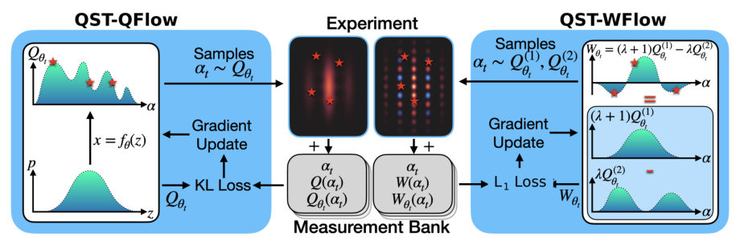
<figcaption class="paper-figure-caption"><b>Fig 1.</b> FIG. 1. Schematic of QST-QFlow (left) and QST-WFlow (right) tomography for bosonic quantum systems. An experimental state is modeled through a normalizing-flow representation of either the Husimi Q function or the Wigner function. The current flow proposes phase-space points, measurements are acquired at those points, and the model is updated to match the measured phase-space signal.</figcaption>
</figure>
<figure class="paper-figure-card">
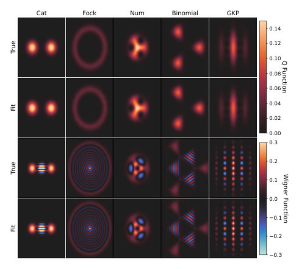
<figcaption class="paper-figure-caption"><b>Fig 2.</b> FIG. 2. Q- and Wigner-function tomography of five single- mode continuous-variable quantum states.</figcaption>
</figure>
<figure class="paper-figure-card">
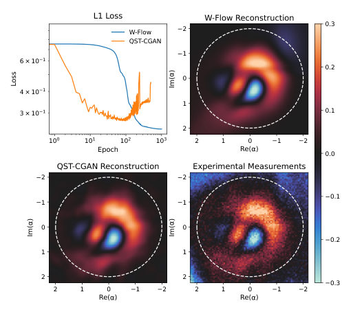
<figcaption class="paper-figure-caption"><b>Fig 3.</b> FIG. 3. Comparison between QST-WFlow and QST-CGAN on noisy single-mode Wigner-function data.</figcaption>
</figure>
<figure class="paper-figure-card">
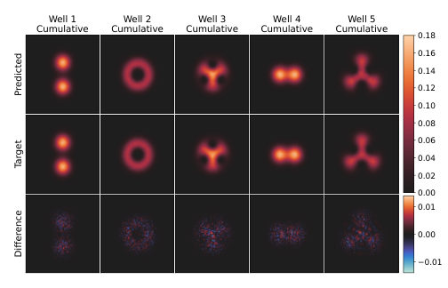
<figcaption class="paper-figure-caption"><b>Fig 4.</b> FIG. 4. Q-function tomography of a five-mode continuous- variable quantum state.</figcaption>
</figure>
</div>

<p><strong>Summary.</strong> The paper introduces QST-Flow, a novel framework using normalizing flows for continuous-variable quantum state tomography. It overcomes the computational bottleneck associated with resolving high-dimensional, non-Gaussian phase-space structures by representing quasiprobability distributions as trainable neural densities. This allows for scalable and measurement-efficient reconstruction of complex bosonic states.</p>
<p><strong>Why it may be interesting.</strong> This work directly addresses the practical limitations of characterizing nonclassical quantum states in continuous variable systems, which is a major topic in quantum optics and quantum information science.</p>
<details>
<summary>Detailed structure</summary>
<p><strong>Main problem.</strong> Continuous-variable quantum state tomography (QST) is computationally limited by resolving non-Gaussian structure in high-dimensional phase space.</p>
<p><strong>Main result.</strong> The QST-Flow framework provides a scalable, measurement-efficient method to reconstruct CV quantum states by modeling their phase-space quasiprobability distributions using normalizing flows.</p>
<p><strong>Method.</strong> It employs flow-based generative models (QST-Flow) to represent the Husimi Q function (QST-QFlow) or the Wigner function (QST-WFlow) as trainable neural densities, avoiding fixed grid limitations.</p>
<p><strong>Model / system.</strong> The focus is on continuous-variable bosonic systems interrogated via phase-space quasiprobability distributions. The method handles both positive functions (Husimi Q) and sign-changing functions (Wigner).</p>
<p><strong>Key observables.</strong> Husimi Q function, Wigner function, reconstructed quantum state density matrix.</p>
<p><strong>Important parameters / regimes.</strong> The dimensionality of the phase space ($2M$ for $M$ modes), which dictates computational scaling.</p>
<p><strong>Assumptions / limitations.</strong> The framework assumes that experimental measurements can provide sufficient samples to train the flow model, and it uses specific mathematical decompositions (e.g., for Wigner function) to maintain normalization.</p>
<p><strong>Figures summary.</strong> Figures demonstrate single-mode reconstructions of various non-Gaussian states (Cat, Fock, etc.) using both Q and W representations, comparing performance against prior ML methods on noisy data.</p>
<p><strong>Paper structure.</strong> The paper introduces the limitations of traditional tomography, proposes the unified flow-based framework (QST-Flow), details the specific models for Q and W functions, derives the necessary loss functions (KL divergence/L1 loss), and validates the method across multiple state types and modes.</p>
</details>
<details>
<summary>Abstract</summary>
<p>Continuous-variable quantum state tomography is limited by the cost of resolving non-Gaussian structure in high-dimensional phase space. We introduce QST-Flow, a quantum state tomography framework via flow-based generative modeling that represents experimentally accessible phase-space quasiprobability distributions with normalized, samplable neural densities rather than a truncated density matrix. The framework has two variants: QST-QFlow models the positive Husimi-$Q$ function with a single normalizing flow, while QST-WFlow models sign-changing Wigner functions as a trainable difference of two normalized flows. This construction preserves quasiprobability normalization and enables exact density evaluation, direct sampling, and importance-sampled learning from finite phase-space measurements without a fixed grid. Benchmarks on non-Gaussian cat, binomial, Gottesman-Kitaev-Preskill, number, and Fock states show accurate single-mode reconstructions, extension to multimode states, robustness on noisy Wigner data, and improved reconstruction error compared with prior machine-learning tomography methods. QST-Flow opens a promising route toward scalable, measurement-efficient phase-space tomography of nonclassical bosonic systems.</p>
</details>
<p><sub><a href="#top">↑ back to top</a></sub></p>

<p><a id="paper-2607.20633"></a></p>
<h3 id="hi-qdc-an-isometric-modular-scalable-architecture-for-quantum-data-centers"><a href="http://arxiv.org/abs/2607.20633v1">HI-QDC: An Isometric Modular Scalable Architecture for Quantum Data Centers</a></h3>
<p><strong>Authors:</strong> Mohadeseh Azari, Anoosha Fayyaz, Amy Babay, David Tipper, Prashant Krishnamurthy, Kaushik Seshadreesan<br>
<strong>Type:</strong> theory · <strong>Category:</strong> quantum information and computing · <strong>PDF:</strong> <a href="https://arxiv.org/pdf/2607.20633v1">https://arxiv.org/pdf/2607.20633v1</a><br>
<strong>Analysis basis:</strong> full PDF text, analyzed in chunks
<strong>Topic relevance:</strong> <code>entanglement &amp; information structure</code> <strong>3/5</strong> · <code>QC/QI experiment</code> <strong>1/5</strong> · <code>methods for driven-dissipative</code> <strong>1/5</strong> · <code>non-equilibrium dynamics</code> <strong>1/5</strong></p>
<div class="figure-strip-hint">↔ Scroll figures horizontally</div>
<div class="paper-figures-scroll">
<figure class="paper-figure-card">
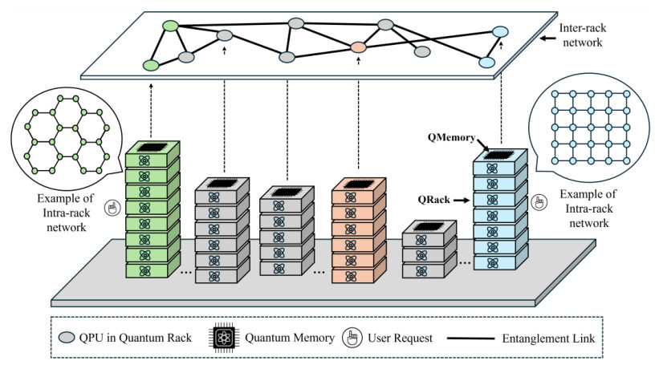
<figcaption class="paper-figure-caption"><b>Fig 1.</b> Figure 1. Quantum data-center network architecture considered in this work. The data center is organized into quantum racks, each containing multiple QPUs and quantum memories. Each rack may use a different intra-rack connectivity pattern, chosen according to the number of QPUs, the elementary-link quality, and the operating regime required for local end-to-end entanglement generation. Across racks, we consider a high-node-degree, server-centric inter-rack topology in which QPUs themselves participate in routing and forwarding. Inter-rack connection requests are routed through this topology, whose path diversity provides multiple edge-disjoint routes between the requested endpoints and lets...</figcaption>
</figure>
<figure class="paper-figure-card">
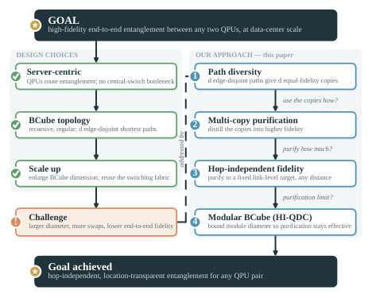
<figcaption class="paper-figure-caption"><b>Fig 2.</b> Figure 2. Road-map of the paper. A server-centric, recursive BCube fabric can be scaled to higher dimensions to provide data-center-scale connectivity, but this increased diameter lowers the raw end-to-end fidelity of cross-QPU connections. To overcome this limitation, we use the d edge-disjoint shortest paths in BCube as d equal-fidelity copies and apply multi-copy purification to restore the connection to a fixed link-level fidelity target (Section II). The HI-QDC organization (Section III) then bounds the diameter of each module, enabling hop-independent and location-transparent entanglement distribution between any pair of QPUs (Section IV).</figcaption>
</figure>
<figure class="paper-figure-card">
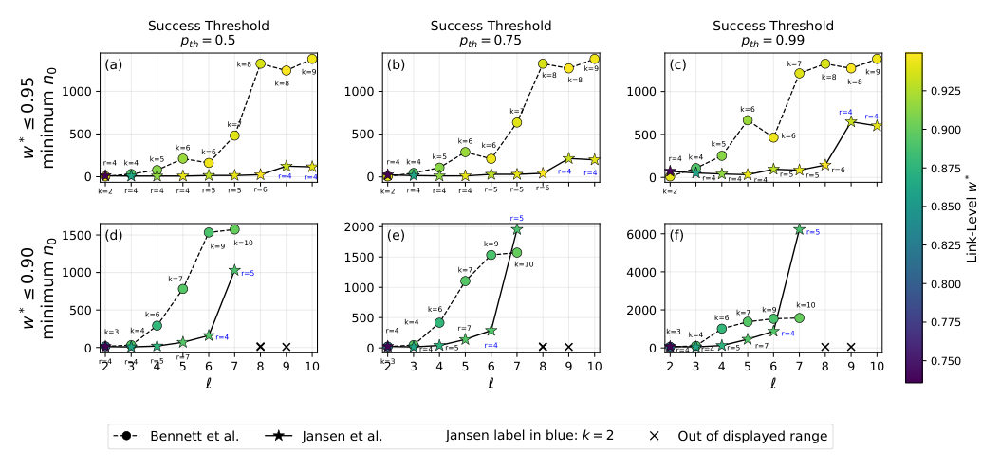
<figcaption class="paper-figure-caption"><b>Fig 3.</b> Figure 3. Minimum number of initial copies n0 required to achieve hop-independent Werner parameter w∗as a function of path length ℓunder different purification strategies. Columns correspond to success-probability thresholds pth, and rows correspond to Werner parameter threshold (w∗≤wth). The y-axis shows the minimum n0 such that Psucc ≥pth. Circles denote BBPSSW, and stars denote the best multi-copy protocol of Jansen et al. selected from r ∈{4, 5, 6, 7}. Labels next to stars indicate the optimal r and the optimal purification recursion depth k, with blue denoting k = 2 and black denoting k = 1. All points are computed using the smallest feasible purification depth k for which purification...</figcaption>
</figure>
<figure class="paper-figure-card">
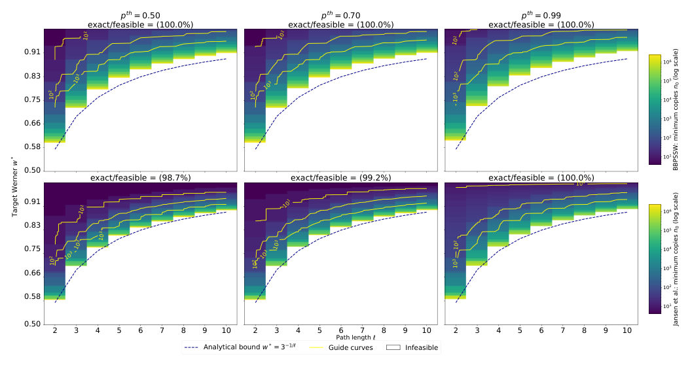
<figcaption class="paper-figure-caption"><b>Fig 4.</b> Figure 4. Black-box resource landscape for recovering a target Werner parameter w∗over a path of length ℓunder different purification strategies and success-probability requirements. Each panel is a heatmap over (ℓ, w∗), where the color indicates the minimum number of input copies n0 required to achieve wout ≥w∗with success probability at least pth. The top row corresponds to BBPSSW purification, while the bottom row shows the best Jansen r-to-1 protocol selected from r ∈{3, 4, 5, 6, 7}. The dashed curve marks the analytical scaling w∗= 3−1/ℓ, and the overlaid contours indicate constant n0 values. White regions are infeasible within the explored search range.</figcaption>
</figure>
<figure class="paper-figure-card">
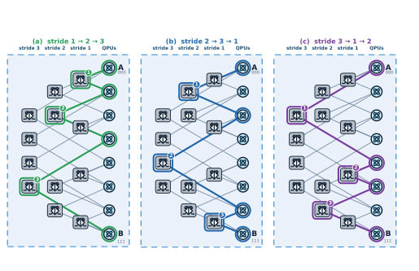
<figcaption class="paper-figure-caption"><b>Fig 5.</b> Figure 5. Edge-disjoint paths between two QPUs separated by a length-3 shortest path, in a BCube(2, 2) inner network. Each panel shows one of the three cyclic stride orderings. Highlighted nodes and edges mark the active path, and numbered badges indicate the traversal order. The three paths use the same three link types in cyclically rotated order, yielding the same end- to-end Werner-parameter product under uniform per-level link quality.</figcaption>
</figure>
</div>

<p><strong>Summary.</strong> This paper addresses the scalability bottleneck in large quantum data centers where long communication paths degrade entanglement fidelity. The authors propose the Hop-Independent Quantum Data Center (HI-QDC), an isometric modular architecture. By leveraging path diversity and end-to-end purification, HI-QDC ensures that network performance remains at the quality level of a single elementary link, regardless of how many modules are chained together.</p>
<p><strong>Why it may be interesting.</strong> While focused on network topology rather than fundamental AMO physics, the concept of using topological redundancy (path diversity) as a resource input for quantum error correction/purification is highly relevant to building scalable quantum hardware platforms.</p>
<details>
<summary>Detailed structure</summary>
<p><strong>Main problem.</strong> The primary challenge is achieving 'hop-independent fidelity' in large quantum data centers, where increasing physical path length degrades end-to-end entanglement quality.</p>
<p><strong>Main result.</strong> The proposed HI-QDC architecture allows modular units to convert their internal path diversity into an effective link-level resource, enabling scalable networks whose performance is independent of the module's internal hop count.</p>
<p><strong>Method.</strong> The authors analyze end-to-end entanglement purification protocols (comparing 2-to-1 vs. nested r-to-1) and apply these requirements to a probabilistic BCube network model.</p>
<p><strong>Model / system.</strong> The system modeled is a server-centric quantum data center network utilizing the BCube topology for interconnecting Quantum Processing Units (QPUs). Entanglement quality is quantified using the Werner state parameter.</p>
<p><strong>Key observables.</strong> Entanglement fidelity, end-to-end entanglement distribution rate, and the minimum number of raw Werner-state copies required for purification.</p>
<p><strong>Important parameters / regimes.</strong> Path length ($\ell$), target elementary-link Werner parameter ($w^*$), and the resource cost (number of input copies $n_0$).</p>
<p><strong>Assumptions / limitations.</strong> The analysis assumes probabilistic generation of elementary links, deterministic entanglement swapping, and that fidelity degradation is solely due to link imperfections rather than memory decoherence.</p>
<p><strong>Figures summary.</strong> Figures illustrate the modular HI-QDC architecture, showing how path diversity supplies raw copies for purification. A key figure compares the exponentially increasing required input copies ($n_0$) versus path length ($\ell$).</p>
<p><strong>Paper structure.</strong> The paper first establishes the fidelity bottleneck in scaling quantum data centers using a black-box model. It then analyzes resource requirements via end-to-end purification protocols, leading to the proposal of the HI-QDC module which resolves the scalability issue by converting path multiplicity into fidelity recovery.</p>
</details>
<details>
<summary>Abstract</summary>
<p>Server-centric quantum data-center architectures offer scalability by distributing communication tasks across QPUs rather than concentrating complexity in a centralized switching core. However, scaling such architectures increases the path length, the number of Bell-state measurements, and the loss of end-to-end fidelity. We ask whether the path diversity of a server-centric topology can be converted into a mechanism for preserving not only rate, but also fidelity. We study this through end-to-end purification as a fidelity-restoration mechanism. First, in a black-box model, we determine the minimum number of raw end-to-end Werner-state copies, each carrying the degraded Werner parameter of a distance-ell path, that purification must consume to recover a single copy matching an elementary link, comparing recursive 2-to-1 and optimized nested r-to-1 purification. Second, we instantiate these requirements in a probabilistic BCube architecture, whose edge-disjoint path diversity supplies the raw copies. Because purification imposes a lower bound on input fidelity, no path redundancy can raise the output below this threshold, which limits scaling. To address it we present the Hop-Independent Quantum Data Center (HI-QDC), an isometric, modular, scalable architecture in which purification transforms end-to-end entanglement across a module into an effective link-level resource for the inter-module topology. Our results identify the regimes in which a BCube module, under end-to-end purification, preserves both the fidelity and the yield of an elementary link. The module then hides its internal hop count and acts as an effective elementary link for a higher-level network. Thus topology supplies the path multiplicity purification requires, while purification converts it into fidelity recovery, enabling recursively scalable quantum data-center networks.</p>
</details>
<p><sub><a href="#top">↑ back to top</a></sub></p>

<p><a id="paper-2607.21478"></a></p>
<h3 id="pseudogap-formation-in-the-moderate-correlated-layered-attractive-hubbard-model"><a href="http://arxiv.org/abs/2607.21478v1">Pseudogap formation in the moderate correlated layered attractive Hubbard model</a></h3>
<p><strong>Authors:</strong> A. V. Belov, A. N. Rubtsov, B. Krippa<br>
<strong>Type:</strong> theory · <strong>Category:</strong> strongly correlated electrons · <strong>PDF:</strong> <a href="https://arxiv.org/pdf/2607.21478v1">https://arxiv.org/pdf/2607.21478v1</a><br>
<strong>Analysis basis:</strong> full PDF text, analyzed in chunks
<strong>Topic relevance:</strong> <code>Keldysh / 2PI / non-Gaussian methods</code> <strong>3/5</strong> · <code>analog quantum simulation</code> <strong>1/5</strong> · <code>driven-dissipative phase transition</code> <strong>1/5</strong> · <code>methods for driven-dissipative</code> <strong>1/5</strong></p>
<div class="figure-strip-hint">↔ Scroll figures horizontally</div>
<div class="paper-figures-scroll">
<figure class="paper-figure-card">
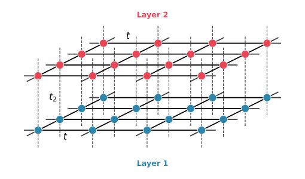
<figcaption class="paper-figure-caption"><b>Fig 1.</b> FIG. 1: Schematic illustration of the layered system. Black solid lines denote intralayer hopping, while grey dotted lines denote interlayer hopping.</figcaption>
</figure>
<figure class="paper-figure-card">
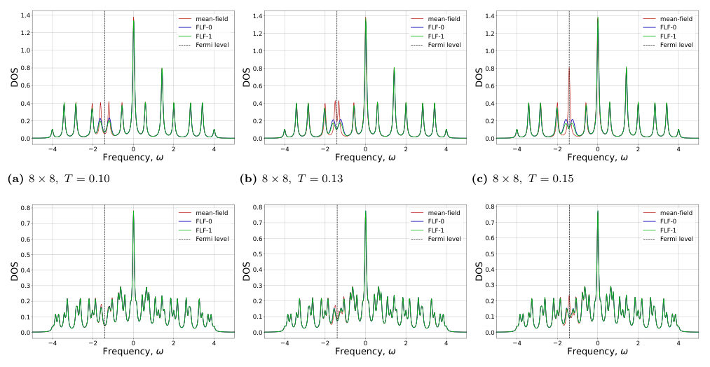
<figcaption class="paper-figure-caption"><b>Fig 2.</b> FIG. 2: Density of states (DOS) for temperatures below, near and above mean-field transition for 8 × 8 (first row) with Tc ≈0.14 and 16 × 16 (second row) with Tc ≈0.1. Red lines is mean-field DOS, blue - FLF-0 DOS, green - FLF-1 DOS, black slashed line is Fermi level. At this line, formation of a gap and a pseudogap is clearly seen. DOS from FLF-1 with Fock correction is nearly the same as DOS in FLF-0</figcaption>
</figure>
<figure class="paper-figure-card">
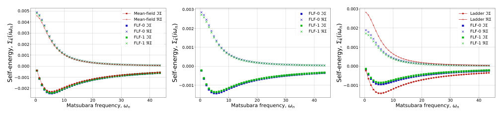
<figcaption class="paper-figure-caption"><b>Fig 3.</b> FIG. 3: Self-energy in FLF method for tempetoratures below, near and above mean-field transition for 16 × 16 cluster with Tc ≈0.1. In (a) FLF self-energy is compared with mean-field - red color, in (c) - is compared with zero-mode ladder approximation - also red color. Square markers denote imaginary part of self-energy, cross markers - real part</figcaption>
</figure>
<figure class="paper-figure-card">
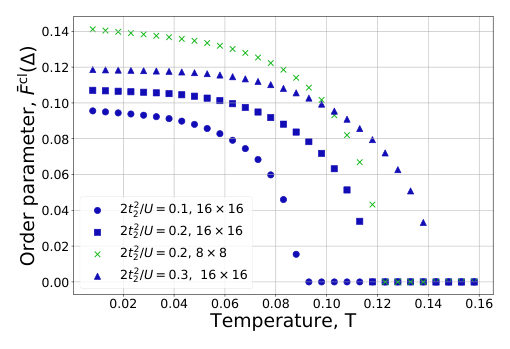
<figcaption class="paper-figure-caption"><b>Fig 4.</b> FIG. 4: Dependence of order parameter on temperature with different exchange couplings for 16 × 16 cluster. Pink circles - 0.1, violet triangles - 0.2, green squares - 0.3 and green crosses - 0.3 for 8 × 8 cluster</figcaption>
</figure>
<figure class="paper-figure-card">
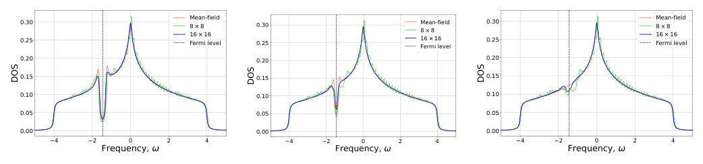
<figcaption class="paper-figure-caption"><b>Fig 5.</b> FIG. 5: Density of states for large lattice near quarter-filling from discussed cluster scheme. Transition temperature from mean-field Tc ≈0.113. Violet lines are DOS on base of the cluster with sizes 8 × 8, green lines - cluster with sizes 16 × 16, pink lines - mean-field result, black dashed line - Fermi-level</figcaption>
</figure>
</div>

<p><strong>Summary.</strong> This paper theoretically investigates pseudogap formation in a layered attractive Hubbard model using the Fluctuating Local Field (FLF) method. The authors demonstrate that this non-perturbative approach captures a persistent pseudogap structure in the density of states, which remains visible even when mean-field theory predicts the superconducting gap has closed due to thermal fluctuations.</p>
<p><strong>Why it may be interesting.</strong> The non-perturbative treatment of superconducting fluctuations via the FLF method provides advanced theoretical insight into spectral weight renormalization and gap physics, which is highly relevant for understanding strongly correlated materials like cuprates.</p>
<details>
<summary>Detailed structure</summary>
<p><strong>Main problem.</strong> The study investigates the formation of a pseudogap phase in a layered attractive Hubbard model, aiming to understand its origin relative to superconducting fluctuations.</p>
<p><strong>Main result.</strong> The Fluctuating Local Field (FLF) method successfully demonstrates the emergence of a persistent pseudogap structure in the density of states, which persists even when mean-field theory predicts the gap should close above $T_c$.</p>
<p><strong>Method.</strong> The primary theoretical tool is the Fluctuating Local Field (FLF) method, applied within a cluster scheme to calculate Green's functions and self-energies non-perturbatively.</p>
<p><strong>Model / system.</strong> The system modeled is the layered attractive Hubbard model at quarter filling. The Hamiltonian includes hopping terms ($t$ intralayer, $t_2$ interlayer) and an interaction term, analyzed using a cluster approach extended to the infinite lattice via a static symmetry-breaking field $\Delta$.</p>
<p><strong>Key observables.</strong> Green's function (GF), self-energy ($\Sigma$), Density of States (DOS), and the superconducting gap structure.</p>
<p><strong>Important parameters / regimes.</strong> Moderate correlation strength ($|U|/t \approx 1$ to $2$) and weak interlayer coupling ($t_2$).</p>
<p><strong>Assumptions / limitations.</strong> The analysis relies on the FLF method, which uses a static approximation for the fluctuating field ($\Delta$), and in some contexts, assumes $\Sigma' \approx 0$ when treating zero modes.</p>
<p><strong>Figures summary.</strong> Figures illustrate the layered hopping structure; DOS plots compare mean-field vs. FLF results showing pseudogap persistence above $T_c$; Self-energy plots show agreement below $T_c$.</p>
<p><strong>Paper structure.</strong> The paper progresses by defining the model and applying the FLF method to finite clusters, then extrapolating these results using a static $\Delta$ approximation to describe the infinite layered system, culminating in comparisons of DOS and self-energies across different temperature regimes.</p>
</details>
<details>
<summary>Abstract</summary>
<p>We consider the layered attractive Hubbard model with a moderate interaction strength at quarter filling. The Green's function, self-energy, and density of states are calculated for relatively large clusters using the fluctuating local field method within the approximation of vanishing effective interaction. The emergence of a pseudogap is demonstrated for the cluster system, and it is shown that integration over the fluctuating field is equivalent to the summation of zero-mode ladder diagrams above critical temperature. For the large layered system, a pseudogap in the density of states is obtained within a cluster scheme that treats the coupling between layers as a static $U(1)$ symmetry-breaking field.</p>
</details>
<p><sub><a href="#top">↑ back to top</a></sub></p>

<p><a id="paper-2607.21555"></a></p>
<h3 id="enhancing-entanglement-purification-with-shared-randomness"><a href="http://arxiv.org/abs/2607.21555v1">Enhancing Entanglement Purification with Shared Randomness</a></h3>
<p><strong>Authors:</strong> Allen Zang, Bikun Li, Xinan Chen, Eric Chitambar, Liang Jiang, Martin Suchara, Tian Zhong<br>
<strong>Type:</strong> theory · <strong>Category:</strong> quantum information and computing · <strong>PDF:</strong> <a href="https://arxiv.org/pdf/2607.21555v1">https://arxiv.org/pdf/2607.21555v1</a><br>
<strong>Analysis basis:</strong> full PDF text, analyzed in chunks
<strong>Topic relevance:</strong> <code>entanglement &amp; information structure</code> <strong>3/5</strong> · <code>methods for driven-dissipative</code> <strong>1/5</strong> · <code>non-equilibrium dynamics</code> <strong>1/5</strong></p>
<div class="figure-strip-hint">↔ Scroll figures horizontally</div>
<div class="paper-figures-scroll">
<figure class="paper-figure-card">
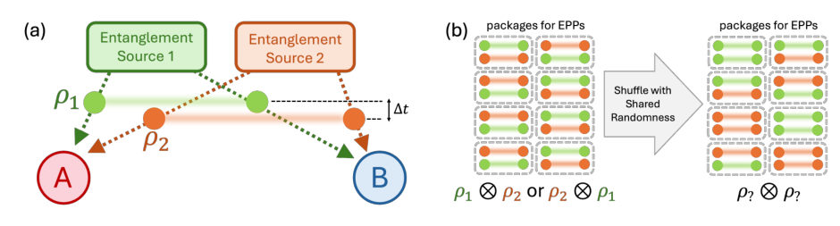
<figcaption class="paper-figure-caption"><b>Fig 1.</b> FIG. 1. Two-source schematic of accumulating and shuffling. (a) Alice and Bob receive one pair from each of two non-identical sources in each distribution round, but the source labels of the received pairs are not available to the purification layer, likely due to e.g. a time jitter ∆t between the distribution of the entangled states that cannot be known beforehand. (b) With shared randomness and buffer memories, they accumulate over m rounds, apply the same random shuffle to their local memories, and group the stored pairs into input packages for the EPP. The mechanism applies to general n sources and n-to-1 EPPs.</figcaption>
</figure>
<figure class="paper-figure-card">
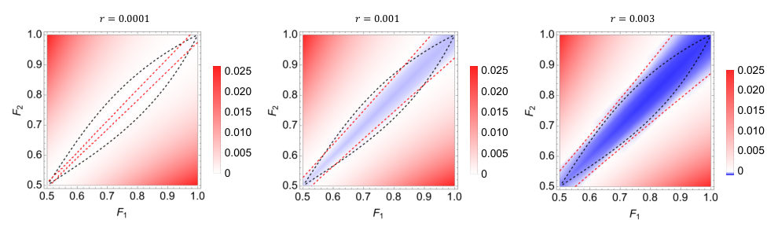
<figcaption class="paper-figure-caption"><b>Fig 2.</b> FIG. 2. Difference between Fsucc(ρ(2) eff,n=2) and Fsucc (F1, F2) for r = 0.0001, 0.001, 0.003. White color is fixed to represent zero value, while blue color denotes negative value and red color corresponds to positive value. The red dashed lines illustrate the boundaries where the difference is exactly zero. The black dashed lines illustrate the boundaries where Fsucc (F1, F2) −max{F1, F2} is exactly zero.</figcaption>
</figure>
<figure class="paper-figure-card">
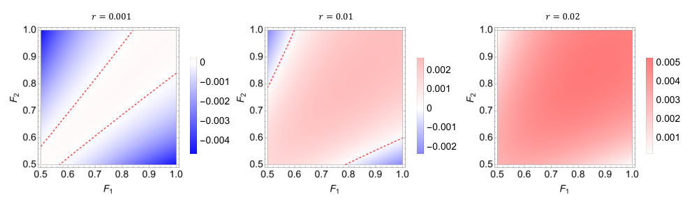
<figcaption class="paper-figure-caption"><b>Fig 3.</b> FIG. 3. Difference between Fsucc  ρ(2) eff,n=2  and Fsucc  ρ(3) eff,n=2  for r = 0.001, 0.01, 0.02. White color is fixed to represent zero value, while blue color denotes negative value and red color corresponds to positive value. The red dashed lines illustrate the boundaries where the difference is exactly zero.</figcaption>
</figure>
</div>

<p><strong>Summary.</strong> This paper introduces an 'accumulating and shuffling' strategy that enhances entanglement purification protocols when multiple noisy entangled sources are available but their identities are unknown. By accumulating states in buffer memories and using shared randomness to mix them before purification, the protocol significantly boosts fidelity and success probability compared to standard methods. This offers a practical theoretical tool for building robust quantum networks.</p>
<p><strong>Why it may be interesting.</strong> This work directly impacts quantum network theory by providing a resource-efficient technique (using only classical randomness and memory) to boost entanglement quality, which is crucial for scaling up distributed quantum computation.</p>
<details>
<summary>Detailed structure</summary>
<p><strong>Main problem.</strong> The research addresses how to improve entanglement fidelity for fault-tolerant quantum computation when input entangled pairs are noisy, heterogeneous, and the source labels are unknown at the purification stage.</p>
<p><strong>Main result.</strong> The proposed 'accumulating and shuffling' strategy significantly enhances both the expected success probability and output Bell fidelity compared to baseline methods, with improvements increasing monotonically with the number of accumulation rounds.</p>
<p><strong>Method.</strong> The authors develop a theoretical framework comparing the performance of standard entanglement purification protocols against those utilizing shared classical randomness to shuffle accumulated entangled states before inputting them into the protocol.</p>
<p><strong>Model / system.</strong> The model involves quantum networks distributing noisy bipartite Werner states ($
ho_i$) from multiple sources ($n$). The core mechanism utilizes buffer quantum memories and relies on the availability of classical shared randomness.</p>
<p><strong>Key observables.</strong> Expected success probability ($p_{succ}$) and success-weighted output Bell fidelity ($F_{succ}$ or $ ilde{F}_{succ}$).</p>
<p><strong>Important parameters / regimes.</strong> Number of sources ($n$), number of accumulation rounds ($m$), decoherence rate parameter ($r$).</p>
<p><strong>Assumptions / limitations.</strong> The protocol requires classical shared randomness and the ability to store states in buffer quantum memories. Simplifications are made assuming mutual independence of random source outputs for certain derivations.</p>
<p><strong>Figures summary.</strong> Figures illustrate schematic comparisons between non-AS and AS scenarios, and later figures compare performance metrics ($F_{succ}$) across different numbers of accumulated rounds ($m=2$ vs $m=3$) relative to decoherence rates ($r$).</p>
<p><strong>Paper structure.</strong> The paper builds from the general problem setup (heterogeneous sources) to introducing the AS strategy. It provides rigorous mathematical proofs comparing performance metrics using tools like elementary symmetric polynomials and analyzing asymptotic limits, concluding with specific analyses involving decoherence channels.</p>
</details>
<details>
<summary>Abstract</summary>
<p>Entanglement purification protocols (EPPs) are essential for improving entanglement fidelity to support fault-tolerant distributed quantum information processing. Practical entanglement sources are often heterogeneous and source labels may be unavailable at the EPP layer. We show that classical shared randomness, together with buffer memories, can enhance entanglement purification when source labels are unavailable, without state characterization or EPP circuit optimization. The strategy is to accumulate multiple entanglement distribution rounds and then use shared randomness to shuffle all the stored entangled states before packaging them as inputs to the EPP. For any $n$ Werner sources and any fixed $n$-to-1 bilocal Clifford EPP, we prove that accumulating and shuffling improves the expected success probability and the success-weighted output Bell fidelity over the baseline without accumulating and shuffling, for every $n$, for every finite number of accumulation rounds and in the asymptotic limit, and the improvement increases monotonically with the number of accumulation rounds.</p>
</details>
<p><sub><a href="#top">↑ back to top</a></sub></p>

<p><a id="paper-2607.20895"></a></p>
<h3 id="heralded-high-dimensional-module-based-quantum-computation"><a href="http://arxiv.org/abs/2607.20895v1">Heralded high-dimensional module-based quantum computation</a></h3>
<p><strong>Authors:</strong> Xiao Zhang, Wen-Qiang Liu, Hai-Rui Wei<br>
<strong>Type:</strong> theory · <strong>Category:</strong> quantum information and computing · <strong>PDF:</strong> <a href="https://arxiv.org/pdf/2607.20895v1">https://arxiv.org/pdf/2607.20895v1</a><br>
<strong>Analysis basis:</strong> full PDF text, analyzed in chunks
<strong>Topic relevance:</strong> <code>quantum measurements</code> <strong>3/5</strong> · <code>interference shaping light</code> <strong>1/5</strong> · <code>measurement-induced transitions</code> <strong>1/5</strong></p>
<div class="figure-strip-hint">↔ Scroll figures horizontally</div>
<div class="paper-figures-scroll">
<figure class="paper-figure-card">
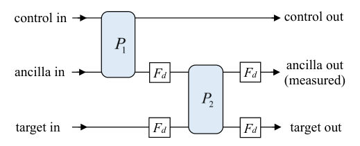
<figcaption class="paper-figure-caption"><b>Fig 1.</b> Figure 1: The schematic diagram for constructing a deterministic high-dimensional generalized CNOT gate. Blocks P1 and P2 are two generalized parity modules. Fd denotes the qudit-based Fourier transformation, which performs the transformation |m⟩→ 1 √</figcaption>
</figure>
<figure class="paper-figure-card">
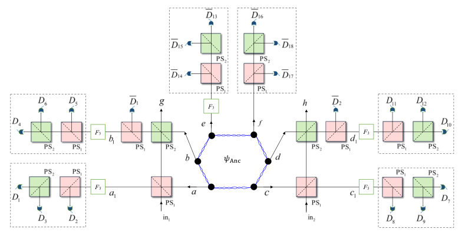
<figcaption class="paper-figure-caption"><b>Fig 2.</b> Figure 2: Schematic diagram of generalized qutrit-based parity module. D and D denote photon-number-resolving detector and single-photon detector, respectively. F3 is qutrit-based Fourier transformation. The circuits in the dashed boxes are designed to measure the output photon in the basis {|0⟩, |1⟩, |2⟩}.</figcaption>
</figure>
<figure class="paper-figure-card">
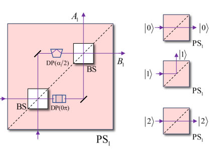
<figcaption class="paper-figure-caption"><b>Fig 3.</b> Figure 3: Schematic diagram of a first-order parity sorter (PS1) [49]. Dove prism flips the transverse cross section of the beam in one arm while leaving the other unchanged. This Mach-Zehnder interferometer routes the photons with even ℓ(l mod 2 = 0) to Port B1 (transmitted) and those with odd ℓ(l mod 2 = 1) to Port A1 (reflected).</figcaption>
</figure>
<figure class="paper-figure-card">
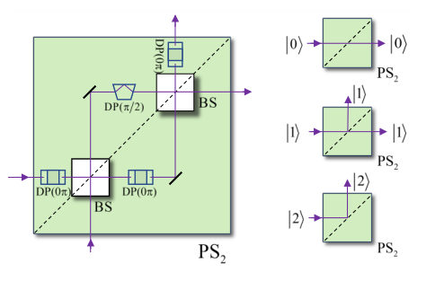
<figcaption class="paper-figure-caption"><b>Fig 4.</b> Figure 4: Schematic diagram of a second-order parity sorter (PS2) [51]. This interferometric device classifies OAM modes by ℓmod 4. The device transmits photons with ℓmod 4 = 0 (e.g., |0⟩, | ± 4⟩), and reflects the photons with l mod 4 = 2 (e.g., | ± 2⟩, | ± 6⟩). For the photons with odd ℓ(e.g., | ± 1⟩, | ± 3⟩), they are randomly led to the two output ports.</figcaption>
</figure>
</div>

<p><strong>Summary.</strong> The paper presents a method to build high-dimensional controlled-NOT (CNOT) quantum gates using generalized parity modules. The construction is heralded and deterministic, overcoming limitations of previous schemes by identifying only two usable module types. This work advances the feasibility of qudit-based quantum computation in optical systems.</p>
<p><strong>Why it may be interesting.</strong> This work provides a robust theoretical framework for building universal quantum gates in high-dimensional Hilbert spaces using measurement-based techniques, which is crucial for scaling up photonic quantum computation beyond simple qubit systems.</p>
<details>
<summary>Detailed structure</summary>
<p><strong>Main problem.</strong> The goal is to develop deterministic, heralded, and dimensionality-insensitive methods for constructing high-dimensional module-based quantum computation gates.</p>
<p><strong>Main result.</strong> The authors successfully constructed a generalized controlled-NOT (CNOT) gate using only two specific types of parity modules out of all possible possibilities. This scheme requires no postselection and generalizes to arbitrary qudit dimensions ($d$).</p>
<p><strong>Method.</strong> They propose constructing the CNOT gate via sequential operations involving generalized parity modules, Fourier transformations, and ancillary qubits/qudits.</p>
<p><strong>Model / system.</strong> The system involves high-dimensional quantum states (qudits) where computation is built upon 'generalized parity modules,' which are implemented optically using Orbital Angular Momentum (OAM) degrees of freedom in single-photon systems.</p>
<p><strong>Key observables.</strong> The success of the parity module operation is heralded by specific detection outcomes from photon-number-resolving and single-photon detectors.</p>
<p><strong>Important parameters / regimes.</strong> The dimensionality $d$ of the qudit basis, and the structure of the two usable parity modules: $\mathcal{P}=(j\ominus i)mod d$ and $\mathcal{P}=(j \oplus i)mod d$.</p>
<p><strong>Assumptions / limitations.</strong> The scheme assumes the ability to implement quantum nondemolition measurements for the parity module and relies on specific detection events (e.g., no firing of certain detectors) to confirm gate success.</p>
<p><strong>Figures summary.</strong> Figures schematically illustrate the construction of the generalized CNOT gate using blocks like $P_1$, $P_2$, and Fourier transformations ($F_d$), showing the optical components involved in parity sorting.</p>
<p><strong>Paper structure.</strong> The paper first introduces the concept and constructs the CNOT gate for qutrits, then generalizes this construction mathematically to arbitrary qudit dimensions ($d \ge 4$) using linear algebra and state evolution equations. Finally, it details an optical implementation scheme utilizing OAM encoding.</p>
</details>
<details>
<summary>Abstract</summary>
<p>Parity measurements have been explored as building blocks for preparing and discriminating entangled states, as well as for implementing quantum computation. We first develop two alternative high-dimensional generalized parity modules, and then propose a procedure for constructing high-dimensional generalized module-based controlled-NOT gate. The construction of module-based quantum computing introduced here is deterministic, heralded, insensitive to the dimensionality of the computing basis, and postselection technique is not required. The result shows that out of $(d-1)!$ generalized parity modules, only modules $ \mathcal{P}=(j\ominus i)\bmod d$ and $ \mathcal{P}=(j \oplus i)\bmod d$ can be used as building blocks for high-dimensional quantum computing. Furthermore, we proposed an optical nondestructive scheme for implementing generalized parity module through quantum nondemolition measurements, and the success of the parity module is heralded by photon-number-resolving detectors and single-photon detectors.</p>
</details>
<p><sub><a href="#top">↑ back to top</a></sub></p>

<p><a id="paper-2607.21256"></a></p>
<h3 id="space-division-multiplexed-quantum-key-distribution-exploiting-multi-plane-light-conversion-for-few-mode-fibers"><a href="http://arxiv.org/abs/2607.21256v1">Space-division multiplexed quantum key distribution exploiting multi-plane light conversion for few-mode fibers</a></h3>
<p><strong>Authors:</strong> Qian Zhang, Stefan Krause, Felix Kunzmann, Juergen W Czarske<br>
<strong>Type:</strong> experiment · <strong>Category:</strong> quantum information and computing · <strong>PDF:</strong> <a href="https://arxiv.org/pdf/2607.21256v1">https://arxiv.org/pdf/2607.21256v1</a><br>
<strong>Analysis basis:</strong> full PDF text, analyzed in chunks
<strong>Topic relevance:</strong> <code>quantum optics experiment</code> <strong>3/5</strong> · <code>QC/QI experiment</code> <strong>1/5</strong> · <code>interference shaping light</code> <strong>1/5</strong></p>
<div class="figure-strip-hint">↔ Scroll figures horizontally</div>
<div class="paper-figures-scroll">
<figure class="paper-figure-card">
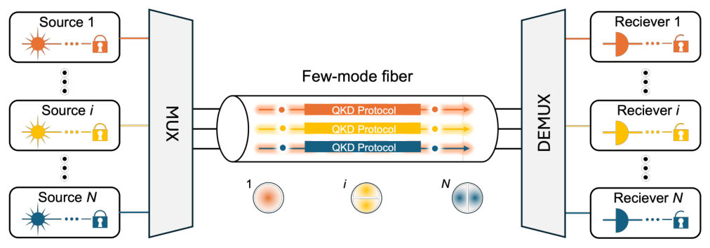
<figcaption class="paper-figure-caption"><b>Fig 1.</b> Figure 1. Proposed concept for parallel channels for QKD using FMF. The number of available quantum channels is determined by the number of spatial modes supported by the MPLC. In the present case, the implemented MPLC supports only a few spatial modes; however, the concept allows for scaling to a large number of quantum channels.</figcaption>
</figure>
<figure class="paper-figure-card">
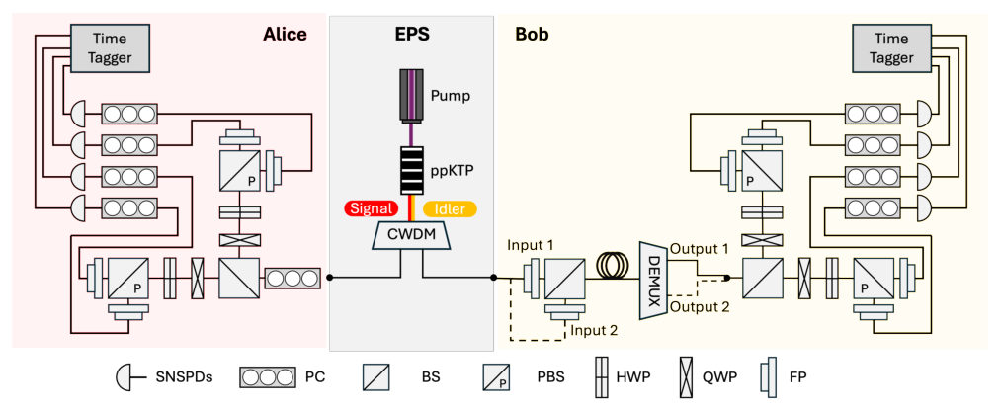
<figcaption class="paper-figure-caption"><b>Fig 2.</b> Figure 2. Scheme of the experimental setup. Abbreviations: BS, beam splitter; CWDM, coarse wavelength division multiplexing; EPS, entangled photon source; FP, fiber port; HWP, half wave plate; PBS, polarization beam splitter; PC, polarization controller; QWP, quarter-wave plate; SNSPD, superconducting nanowire single-photon detectors.</figcaption>
</figure>
<figure class="paper-figure-card">
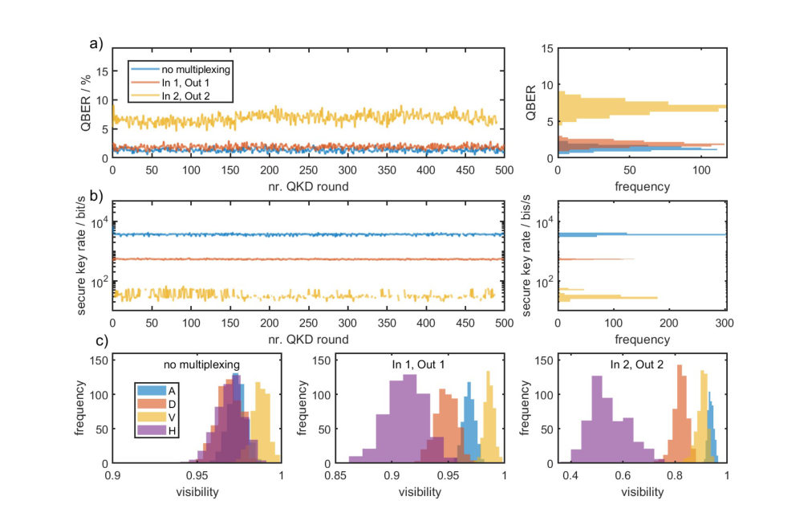
<figcaption class="paper-figure-caption"><b>Fig 3.</b> Figure 3. Results of the BBM92 QKD experiment with (red and yellos) and without spatial multiplexing. QBER (a), secure key rate (b) and average visibility (c) as a function of QKD round together with the corresponding histograms. For the three test cases, the QKD protocol was continuously operated for 40 min in the non-multiplexed reference configuration, 115 min for the Input 1–Output 1 channel, and 184 min for the Input 2–Output 2 channel.</figcaption>
</figure>
<figure class="paper-figure-card">
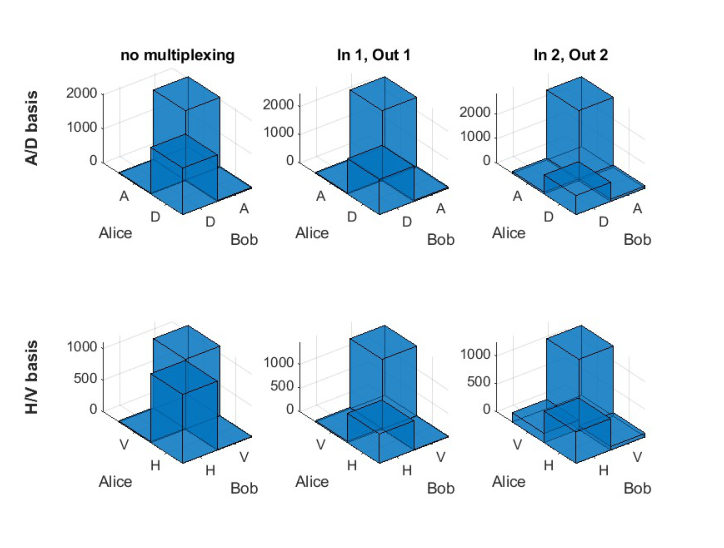
<figcaption class="paper-figure-caption"><b>Fig 4.</b> Figure 4. Average coincidence counts per QKD round for the QKD link without and with (In 1, Out 1 and In 2 Out 2) multiplexing for the two bases A/D and H/V.</figcaption>
</figure>
</div>

<p><strong>Summary.</strong> The paper proposes and experimentally validates a method for space-division multiplexing Quantum Key Distribution (QKD) using few-mode fibers. By employing Multi-Plane Light Conversion (MPLC), they successfully separate entangled photons transmitted through distinct guided modes, enabling parallel quantum channels. This demonstrates a pathway toward building scalable, multi-user quantum internet architectures.</p>
<p><strong>Why it may be interesting.</strong> This work directly addresses scalability in quantum networking by integrating spatial degrees of freedom into established QKD protocols, which is a major topic at the intersection of quantum optics and communication theory.</p>
<details>
<summary>Detailed structure</summary>
<p><strong>Main problem.</strong> The challenge is achieving high key rates and distributing independent secret keys for Quantum Key Distribution (QKD) in practical quantum communication networks.</p>
<p><strong>Main result.</strong> The authors successfully demonstrated a space-division multiplexed BBM92 QKD scheme using few-mode fibers, achieving measurable secure key rates across multiple parallel channels.</p>
<p><strong>Method.</strong> They employed Multi-Plane Light Conversion (MPLC) to demultiplex entangled photons transmitted through a Few-Mode Fiber (FMF), exploiting distinguishable guided modes as independent quantum channels.</p>
<p><strong>Model / system.</strong> The system uses an FMF supporting multiple spatial modes ($ ext{LP}<em 11b>{01}$ and $ ext{LP}</em>$) to carry entangled photon pairs generated via SPDC. The MPLC acts as the receiver component for separating these parallel channels.</p>
<p><strong>Key observables.</strong> Quantum Bit Error Rates (QBER) ($1.9 \pm 0.4\%$ and $6.8 \pm 0.8\%$), secure key rates (bits/s), and visibility ($V_H$).</p>
<p><strong>Important parameters / regimes.</strong> FMF core diameter ($15 \mu	ext{m}$), NA $= 0.1$, operating wavelengths ($\lambda_s = 1530 	ext{ nm}$, $\lambda_i = 1570 	ext{ nm}$), and the QKD security threshold of $11\%$.</p>
<p><strong>Assumptions / limitations.</strong> The approach assumes that exploiting distinguishable guided modes preserves the necessary quantum correlations for secure QKD, unlike high-dimensional schemes based on coherent superpositions.</p>
<p><strong>Figures summary.</strong> Figure 1 illustrates the concept using FMF and MPLC for parallel channels. Figure 2 details the experimental setup components. Figure 3 compares QBER and key rate vs. rounds for multiplexed versus non-multiplexed cases, and Figure 4 shows coincidence counts per round.</p>
<p><strong>Paper structure.</strong> The paper introduces the need for scalable QKD networks, presents the theoretical concept of using FMFs with MPLC for space-division multiplexing, details the experimental setup and measurements (BBM92 protocol), reports the measured QBER and key rates, and discusses limitations regarding coupling efficiency.</p>
</details>
<details>
<summary>Abstract</summary>
<p>As quantum key distribution (QKD) progresses from laboratory demonstrations toward practical deployment, quantum communi- cation networks increasingly require higher key rates and the ability to distribute independent secret keys among multiple users and network nodes. In this paper we present a promsing approach with multi-plane light conversion (MPLC) for demultiplexing entangled photons, transmitted through a few-mode fiber (FMF). We experimentally demonstrated a spatially multiplexed BBM92 QKD scheme. The modes are selectively excited through separate single-mode-fibers and subsequently separated by MPLC into distinct output ports. Unlike high-dimensional QKD based on coherent modal superpositions, our approach exploits distinguishable guided modes as parallel channels while preserving the entanglement required for QKD. For the multiplexed links, we obtain quantum bit error rates of $1.9 \pm 0.4\%$ for the channel 1 and $6.8 \pm 0.8\%$ for the channel 2. These results are relevant for scalable quantum-secured networks, space-division-multiplexed QKD systems, multi-user entanglement distribution, and future quantum internet architectures, where parallel quantum channels must be implemented without compromising the quantum correlations required for security.</p>
</details>
<p><sub><a href="#top">↑ back to top</a></sub></p>

<p><a id="paper-2607.20726"></a></p>
<h3 id="exact-nagaoka-to-spiral-transition-in-the-doped-infinite-u-triangular-lattice"><a href="http://arxiv.org/abs/2607.20726v1">Exact Nagaoka-to-spiral transition in the doped infinite-U triangular lattice</a></h3>
<p><strong>Authors:</strong> Yang Zhang, Cristian D. Batista<br>
<strong>Type:</strong> theory · <strong>Category:</strong> strongly correlated electrons · <strong>PDF:</strong> <a href="https://arxiv.org/pdf/2607.20726v1">https://arxiv.org/pdf/2607.20726v1</a><br>
<strong>Analysis basis:</strong> full PDF text, analyzed in chunks
<strong>Topic relevance:</strong> <code>analog quantum simulation</code> <strong>3/5</strong> · <code>exotic spin models in light-matter</code> <strong>1/5</strong></p>
<div class="figure-strip-hint">↔ Scroll figures horizontally</div>
<div class="paper-figures-scroll">
<figure class="paper-figure-card">
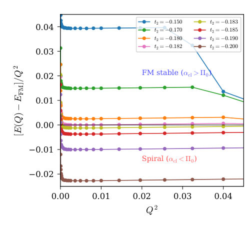
<figcaption class="paper-figure-caption"><b>Fig 1.</b> FIG. 1. Spiral stiffness [E(Q)−EFM]/Q2 (Q along Γ–M) from the Trugman-01 method (0+1 magnon space) on 100 × 100. The sign change between t2 = −0.182 and −0.183 pinpoints t2,c/t1 = −0.182; the Q →0 plateau gives αcl −Π0, while the bending at larger Q reflects the positive one-magnon O(Q4) stiffness.</figcaption>
</figure>
<figure class="paper-figure-card">
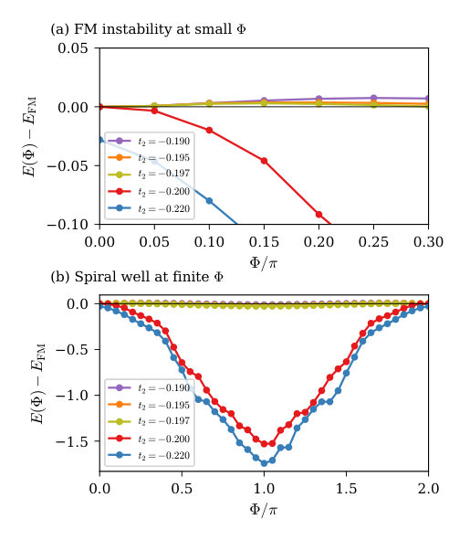
<figcaption class="paper-figure-caption"><b>Fig 2.</b> FIG. 2. Spectral flow on 3 √</figcaption>
</figure>
<figure class="paper-figure-card">
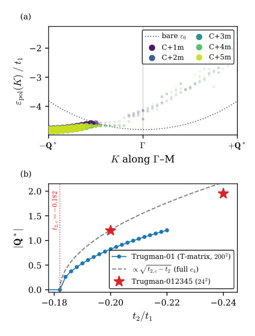
<figcaption class="paper-figure-caption"><b>Fig 3.</b> FIG. 3. (a) Polaron dispersion in the spiral phase (t2/t1 = −0.20) versus the center-of-mass momentum K along the lab- frame path −Q∗→Γ→+Q∗(|Q∗| = 1.2), for magnon trunca- tions C+1m, . . . ,C+5m (viridis). Marker size ∝Z(K); dot- ted: bare dispersion ε0. A sharp quasiparticle (Z ≃0.92) at the Lifshitz-shifted momentum K = −Q∗evolves into a multi-magnon continuum beyond the critical momentum Kc, where the spiral becomes locally unstable (see SM [23]). The dispersion is already converged at the one-magnon level, consistent with the suppression of higher-magnon processes for the small spiral wavevector Q∗. (b) Optimal magnitude of spiral wavevector, Q∗, versus t2/t1 along Γ–M, obtained from...</figcaption>
</figure>
</div>

<p><strong>Summary.</strong> This work precisely locates the quantum critical point where Nagaoka ferromagnetism destabilizes into an incommensurate spiral state on a triangular lattice. By combining analytical theory with advanced numerical methods, the authors establish $t_{2,c}/t_1 = -0.182$ as the transition boundary. This provides crucial theoretical insight into magnetic fluctuations and pairing mechanisms in doped correlated electron systems.</p>
<p><strong>Why it may be interesting.</strong> The rigorous determination of a quantum phase transition boundary in a highly correlated model like the Hubbard model is fundamental to understanding magnetic ordering mechanisms relevant to high-temperature superconductivity.</p>
<details>
<summary>Detailed structure</summary>
<p><strong>Main problem.</strong> The study determines the exact quantum instability point where Nagaoka ferromagnetism breaks down into a long-wavelength coplanar spiral state in a doped triangular lattice.</p>
<p><strong>Main result.</strong> The transition occurs at a critical hopping ratio of $t_{2,c}/t_1 = -0.182$, establishing the first quantum instability of this ferromagnetic phase and providing a baseline for magnon-mediated pairing.</p>
<p><strong>Method.</strong> The problem is solved by reducing it to an effective two-body hole–magnon scattering problem, utilizing analytical calculations combined with rigorous numerical techniques like Exact Diagonalization (ED) and spectral flow analysis.</p>
<p><strong>Model / system.</strong> The system is the single-hole infinite-$U$ Hubbard model on a triangular lattice, incorporating nearest-neighbor ($t_1$) and next-nearest-neighbor ($t_2$) hopping terms. The physics is governed by kinetic energy minimization in the presence of strong correlations.</p>
<p><strong>Key observables.</strong> Spiral stiffness coefficient ($c_2$), quasiparticle weight ($Z \simeq 0.92$), ground-state energy difference $E(\Phi) - E_{FM}$ vs. magnetic flux $\Phi$, and the optimal spiral wavevector $Q^*$.</p>
<p><strong>Important parameters / regimes.</strong> The critical hopping ratio $t_{2,c}/t_1 = -0.182$ is central; the model operates in the infinite-$U$ limit.</p>
<p><strong>Assumptions / limitations.</strong> The analysis treats the hard-core hole–magnon constraint exactly and relies on small-$Q$ expansions near criticality to characterize the continuous nature of the transition.</p>
<p><strong>Figures summary.</strong> Figures illustrate the vanishing spiral stiffness at $t_{2,c}/t_1 = -0.182$, show the formation of an energy minimum (spiral well) in spectral flow plots as $|t_2|$ increases, and map out polaron dispersion curves in the resulting spiral phase.</p>
<p><strong>Paper structure.</strong> The paper systematically analyzes the instability by first deriving effective Hamiltonians, then using analytical methods to pinpoint the critical point ($t_{2,c}/t_1 = -0.182$), confirming this result with ED and spectral flow analysis across multiple diagnostics (e.g., energy vs. flux, quasiparticle weight).</p>
</details>
<details>
<summary>Abstract</summary>
<p>We study the single-hole infinite-$U$ Hubbard model on the triangular lattice with nearest- and next-nearest-neighbor hoppings $t_1$ and $t_2$. A frustrating $t_2$ destabilizes Nagaoka ferromagnetism through a Lifshitz transition to a long-wavelength coplanar spiral at $t_{2,c}/t_1=-0.182$. We determine the critical point analytically by reducing the many-body problem to an effective two-body hole--magnon scattering problem in which the hard-core hole--magnon constraint is treated exactly. Numerical calculations confirm the spiral ground state and reveal a coherent spin polaron with quasiparticle weight $Z\simeq0.92$ at the Lifshitz-shifted momentum $\mathbf{K}=-\mathbf{Q}^*$. These results establish the first quantum instability of the triangular-lattice Nagaoka ferromagnet and provide the magnetic baseline for magnon-mediated pairing at finite doping.</p>
</details>
<p><sub><a href="#top">↑ back to top</a></sub></p>

<p><a id="paper-2607.21430"></a></p>
<h3 id="shiba-duality-and-math686math-altermagnetism-pairing-and-charge-orders-in-bipartite-attractive-hubbard-models"><a href="http://arxiv.org/abs/2607.21430v1">Shiba duality and $η$-altermagnetism: Pairing and charge orders in bipartite attractive Hubbard models</a></h3>
<p><strong>Authors:</strong> Yu-Ping Lin<br>
<strong>Type:</strong> theory · <strong>Category:</strong> strongly correlated electrons · <strong>PDF:</strong> <a href="https://arxiv.org/pdf/2607.21430v1">https://arxiv.org/pdf/2607.21430v1</a><br>
<strong>Analysis basis:</strong> full PDF text, analyzed in chunks
<strong>Topic relevance:</strong> <code>analog quantum simulation</code> <strong>3/5</strong> · <code>Keldysh / 2PI / non-Gaussian methods</code> <strong>1/5</strong></p>
<div class="figure-strip-hint">↔ Scroll figures horizontally</div>
<div class="paper-figures-scroll">
<figure class="paper-figure-card">
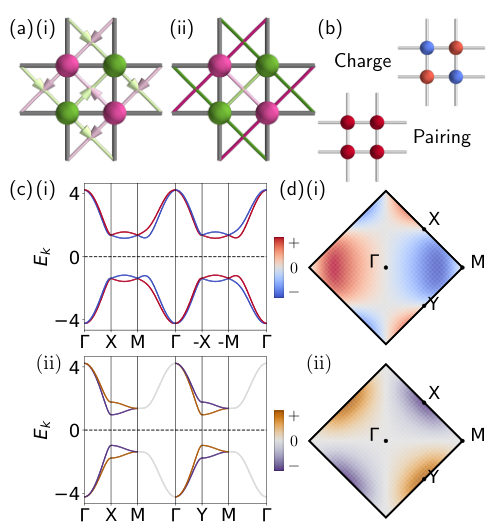
<figcaption class="paper-figure-caption"><b>Fig 1.</b> FIG. 1. η-ALMs on the checkerboard lattice. (a) The lattice with two sublattices (green and pink). (i) The odd-parity model has sublattice currents and (ii) the even-parity model has sublattice spin bonds (darker and lighter for ±σ3 and blank for 0). (b) CDM and USP orders in the ground state, where we plot (⟨ni⟩−1)/2 and |⟨c† i↑c† i↓⟩|sign(Re(⟨c† i↑c† i↓⟩)), respectively. (c) The band structures in η-ALMs have (i) odd-parity η-pseudospin splitting with ηm = ±1 and (ii) even- parity spin-η-locked splitting with ηmσ3 = ±1. (d) The BZ mapping of splitting energy show the (i) p-wave splitting in odd-parity η-ALM and (ii) d-wave splitting in even-parity η- ALM. The colors in (b)-(d) represent...</figcaption>
</figure>
</div>

<p><strong>Summary.</strong> This work develops the concept of $\eta$-altermagnetism by applying Shiba duality to map spin-based Altermagnetism principles onto charge and pairing orders. Using BdG theory on attractive Hubbard models, the authors predict specific $\eta$-pseudospin splitting patterns that arise from symmetry breaking due to lattice hopping anisotropies.</p>
<p><strong>Why it may be interesting.</strong> It extends concepts of magnetic ordering (ALM) into superconducting/charge sectors using a novel pseudospin degree of freedom ($\eta$), which is relevant for understanding exotic pairing symmetries in strongly correlated superconductors.</p>
<details>
<summary>Detailed structure</summary>
<p><strong>Main problem.</strong> The paper investigates $\eta$-altermagnetism ($\eta$-ALM) as a generalization of Altermagnetism (ALM) to pairing and charge orders in attractive Hubbard models.</p>
<p><strong>Main result.</strong> Shiba duality establishes an exact correspondence between repulsion-driven Antiferromagnetism (AFM) and attraction-driven $\eta$-AFM, leading to observable $\eta$-pseudospin splitting structures like $p$-, $d$-, or $f$-wave patterns.</p>
<p><strong>Method.</strong> The study employs mean-field Bogoliubov-de Gennes (BdG) theory combined with Shiba duality mapping techniques.</p>
<p><strong>Model / system.</strong> The system is modeled by the pure Hubbard Hamiltonian on bipartite lattices, analyzed at half-filling using both spin and $\eta$-pseudospin order parameters.</p>
<p><strong>Key observables.</strong> Onsite charge order ($s_{\mu}^i$), onsite spin order ($\sigma_{\mu}^2$), onsite pairing order ($p_{\mu}^i$), and the resulting $\eta$-pseudospin splitting energies in band structures.</p>
<p><strong>Important parameters / regimes.</strong> Half-filling ($n_f=1$), attractive interaction strength (related to $U_0 < 0$), and hopping anisotropies (e.g., second-neighbor hopping).</p>
<p><strong>Assumptions / limitations.</strong> The analysis relies on mean-field approximations within the BdG formalism, assuming intrinsic particle-hole symmetry for certain analyses.</p>
<p><strong>Figures summary.</strong> Figures illustrate $\eta$-ALMs on checkerboard and honeycomb lattices, showing ground-state orders (CDM and USP), resulting band splitting patterns, and BZ mappings of these energies.</p>
<p><strong>Paper structure.</strong> The paper first establishes the connection via Shiba duality between spin ALM and $\eta$-ALM. It then details the BdG formalism for calculating charge/pairing orders and analyzes how anisotropic hopping breaks symmetry to generate measurable $\eta$-pseudospin splitting in momentum space.</p>
</details>
<details>
<summary>Abstract</summary>
<p>We show that Shiba duality maps the altermagnetic principle of momentum-dependent band splitting from spin to $η$-pseudospin, defining $η$-altermagnetism ($η$-ALM) as a Bogoliubov-de Gennes (BdG) counterpart of ALM in pairing and charge orders. In half-filled pure Hubbard models on bipartite lattices, the duality relates repulsion-driven antiferromagnetism (AFM) to attraction-driven $η$-AFM with uniform singlet pairing and staggered charge-density modulation. In the BdG bands, the Shiba-dual parity-time-reversal $\mathcal{\tilde{P}}\mathcal{\tilde{T}}$ symmetry protects a Kramers degeneracy of $η$-pseudospin. Anisotropic second-neighbor hopping breaks this degeneracy and generates $η$-ALM. Odd-parity $η$-ALM shows $η$-pseudospin splitting, whereas even-parity $η$-ALM has spin-$η$-locked splitting. Hartree-Fock-Bogoliubov computations on checkerboard and honeycomb lattices find $η$-ALMs with $p$-, $d$-, and $f$-wave splitting structures. Possible generalizations and experimental probes are discussed.</p>
</details>
<p><sub><a href="#top">↑ back to top</a></sub></p>

<p><a id="paper-2607.21248"></a></p>
<h3 id="tailoring-optical-schrodinger-cat-states-via-orientation-dependent-high-harmonic-generation-in-math722math"><a href="http://arxiv.org/abs/2607.21248v1">Tailoring optical Schrödinger cat states via orientation-dependent high-harmonic generation in $\rm{H}_2^+$</a></h3>
<p><strong>Authors:</strong> Ziyang Gan, Wei-Chao Jiang, Ahai Chen, Yuhai Jiang<br>
<strong>Type:</strong> theory · <strong>Category:</strong> other · <strong>PDF:</strong> <a href="https://arxiv.org/pdf/2607.21248v1">https://arxiv.org/pdf/2607.21248v1</a><br>
<strong>Analysis basis:</strong> full PDF text, analyzed in chunks
<strong>Topic relevance:</strong> <code>interference shaping light</code> <strong>3/5</strong></p>
<div class="figure-strip-hint">↔ Scroll figures horizontally</div>
<div class="paper-figures-scroll">
<figure class="paper-figure-card">
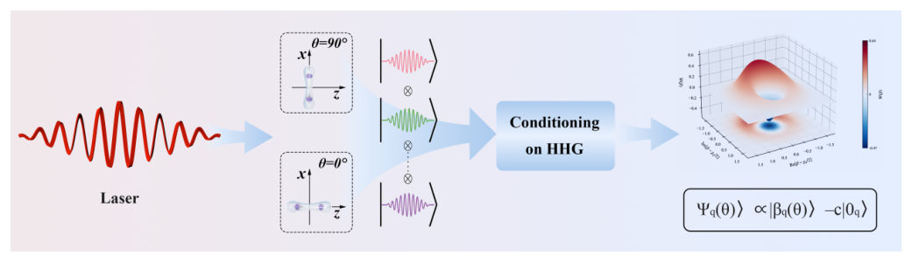
<figcaption class="paper-figure-caption"><b>Fig 1.</b> FIG. 1. Schematic of the orientation-controlled cat-state-generation scheme. An intense linearly polarized 800-nm laser pulse, initially in a high-photon-number coherent state |αL⟩, is focused into an aligned H+ 2 target. The molecular axis is oriented at an angle θ with respect to the laser polarization ˆez; the two limiting geometries θ = 0◦(parallel) θ = 90◦(perpendicular) are highlighted. The strong-field interaction generates a high-harmonic spectrum whose amplitude and phase depend on θ. Conditioning on the HHG signal — selected either at the resonance-enhanced low orders ( 1σg →1σu, near the 7th harmonic) or at the two-center-interference plateau harmonics — projects the selected...</figcaption>
</figure>
<figure class="paper-figure-card">
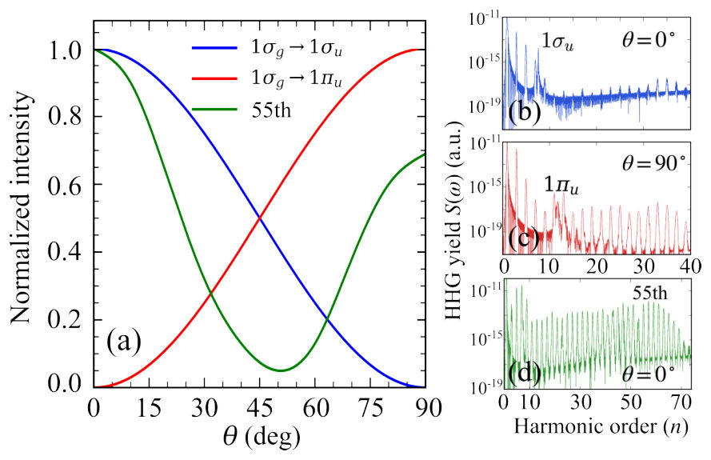
<figcaption class="paper-figure-caption"><b>Fig 2.</b> FIG. 2. Orientation dependence of the HHG response of H+ 2 and representative spectra. (a) Normalized harmonic intensity as a function of molecular orientation angle θ for the three conditioning channels used in this work: the 1σg →1σu resonance- enhanced peak (blue), the 1σg →1πu resonance-enhanced peak (red), and the q = 55 plateau harmonic subject to two-center interference (green). (b,c) HHG spectra at θ = 0◦and θ = 90◦, respectively, for a driving intensity I0 = 1 × 1014 W/cm2; the two non-odd resonance peaks near orders qσ and qπ are clearly visible. (d) HHG spectrum at θ = 0◦for I0 = 3 × 1014 W/cm2, showing the plateau region in which the q = 55 harmonic is selected for conditioning.</figcaption>
</figure>
<figure class="paper-figure-card">
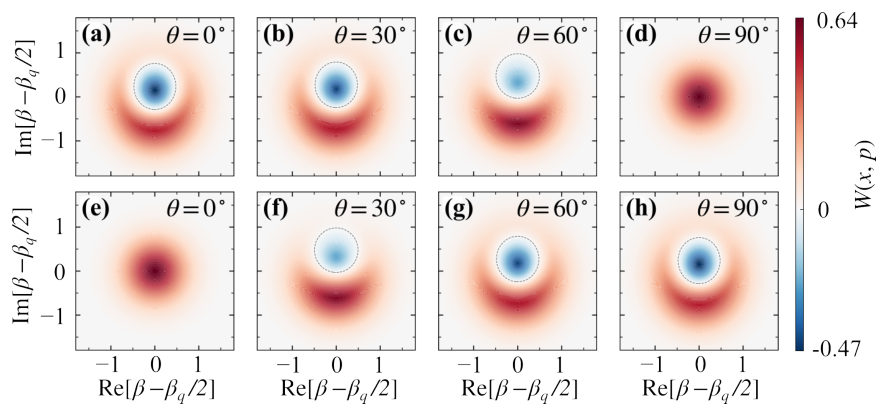
<figcaption class="paper-figure-caption"><b>Fig 3.</b> FIG. 3. Post-selected Wigner functions Wq(x, p; θ) for conditioning on the two resonance-enhanced low-order peaks of H+ 2 (I0 = 1 × 1014 W/cm2, 800 nm), plotted in the shifted quadrature plane (Re[β −βq/2], Im[β −βq/2]) of harmonic mode q, centered at the midpoint βq/2 of the two coherent components. Top row [(a)–(d)]: conditioning on the 1σg →1σu resonance (order qσ) at θ = 0◦, 30◦, 60◦, and 90◦, illustrating the | cos θ|-driven progression from a genuine Schr¨odinger cat (a) through intermediate configurations (b,c) to a tight kitten approaching the single-photon Fock state |1qσ⟩(d). Bottom row [(e)–(h)]: conditioning on the 1σg →1πu resonance (order qπ) at the same four orientations,...</figcaption>
</figure>
<figure class="paper-figure-card">
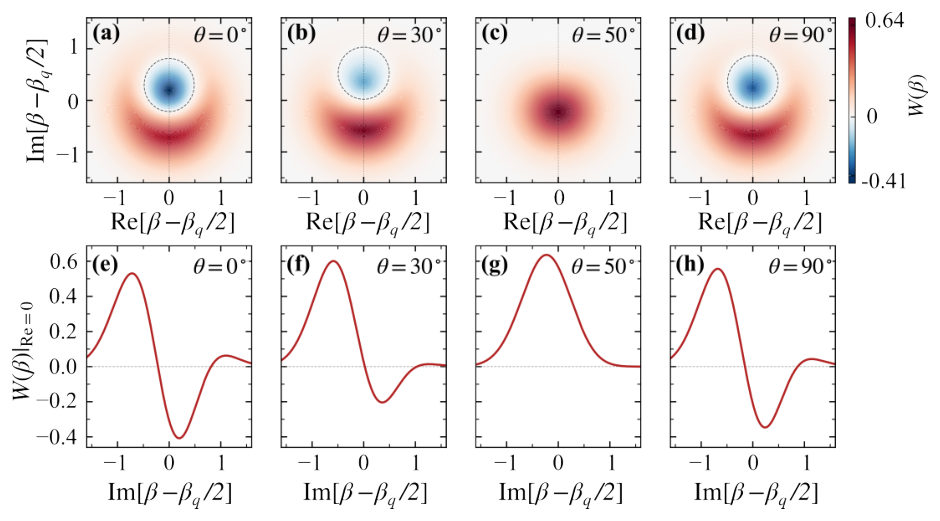
<figcaption class="paper-figure-caption"><b>Fig 4.</b> FIG. 4. Post-selected Wigner functions Wq=55(x, p; θ) for conditioning on the q = 55 plateau harmonic of H+ 2 (I0 = 3×1014 W/cm2, 800 nm), plotted in the shifted quadrature plane (Re[β−βq/2], Im[β−βq/2]). Top row [(a)–(d)]: Wigner distri- butions at θ = 0◦, 30◦, 50◦, and 90◦, showing the two-center-interference-driven reentrant crossover across the order-dependent interference angle θ∗(55) ≈50◦[Eq. (9)]: genuine Schr¨odinger cats at θ = 0◦(a) and 30◦(b), a tight kitten approaching |1q=55⟩ at the interference angle θ = 50◦(c), and a recovered cat at θ = 90◦(d). Bottom row [(e)–(h)]: corresponding cross-sections Wq=55(0, p; θ) at Re[β −βq/2] = 0, reaching the analytical |1⟩-state floor −2/π...</figcaption>
</figure>
</div>

<p><strong>Summary.</strong> The authors theoretically show that the orientation of an $
m{H}_2^+$ molecule acts as a structural switch to engineer optical Schrödinger cat states using high-harmonic generation. By analyzing two different physical mechanisms—resonance selection and destructive interference—they demonstrate tunable crossovers between 'kitten' and 'cat' quantum regimes, offering unprecedented control over nonclassical light sources.</p>
<p><strong>Why it may be interesting.</strong> This work demonstrates using molecular structure ($  heta$) as a novel, intrinsic control knob in quantum optics to manipulate complex nonclassical states like Schrödinger cats, which is highly relevant for advanced quantum light sources and quantum simulation.</p>
<details>
<summary>Detailed structure</summary>
<p><strong>Main problem.</strong> The goal is to engineer nonclassical optical Schrödinger cat states by controlling the high-harmonic generation (HHG) process in a molecular system.</p>
<p><strong>Main result.</strong> Molecular orientation ($   heta$) provides a structural control parameter, enabling tunable crossovers between 'kitten' and 'cat' quantum states via two distinct physical mechanisms: resonance enhancement and two-center destructive interference.</p>
<p><strong>Method.</strong> The study couples Time-Dependent Schrödinger Equation (TDSE) simulations with the fully quantized HHG framework to calculate post-selected harmonic-mode states.</p>
<p><strong>Model / system.</strong> The system involves an $
m{H}_2^+$ molecule interacting with a strong, linearly polarized 800 nm laser pulse. The state is characterized by its Wigner function $W(x, p; 	heta)$.</p>
<p><strong>Key observables.</strong> Wigner function negativity (diagnosing nonclassicality), the amplitude $|eta_q(	heta)|$ of the post-selected state, and the characterization as 'kitten', 'cat', or classical.</p>
<p><strong>Important parameters / regimes.</strong> The molecular orientation angle ($  heta$), the harmonic order ($q$), and the laser intensity/focal geometry (which are shown to be decoupled from the primary control).</p>
<p><strong>Assumptions / limitations.</strong> The coherence factor $c$ is assumed essentially orientation-independent, and the analysis relies on post-selection via XUV photon-number resolution.</p>
<p><strong>Figures summary.</strong> Figures schematically illustrate how varying $ heta$ causes a crossover between 'kitten' and 'cat' states. Specific cuts show the evolution of $|eta_{55}(	heta)|$, demonstrating reentrant behavior around an interference minimum $  heta^*$.</p>
<p><strong>Paper structure.</strong> The paper develops the theoretical framework by coupling TDSE to quantized HHG, then analyzes two distinct control regimes: resonance-enhanced low-order harmonics (showing opposite crossovers for different transitions) and plateau harmonics exploiting two-center destructive interference (showing a reentrant cat $ o$ kitten $ o$ cat sequence).</p>
</details>
<details>
<summary>Abstract</summary>
<p>We theoretically demonstrate that the molecular orientation angle $θ$ provides a structurally intrinsic, continuously tunable control parameter for engineering optical Schrödinger cat states via high-harmonic generation (HHG) in H$_2^+$. Coupling time-dependent Schrödinger equation simulations to the fully quantized HHG framework, we evaluate the Wigner functions of the post-selected harmonic-mode states under two complementary conditioning strategies. Conditioning on resonance-enhanced low-order harmonics exploits the complementary dipole selection rules of the $1σ_g\to1σ_u$ and $1σ_g\to1π_u$ transitions, driving a kitten-cat crossover whose direction is opposite in the two channels as $θ$ is varied. Conditioning on plateau harmonics instead exploits two-center destructive interference, producing a reentrant cat$\to$kitten$\to$cat transition controlled by the order-dependent interference angle $θ^*(q)$. In both cases the crossover is decoupled from the laser intensity, focal geometry, and molecular density, offering a degree of control with no counterpart in atomic targets.</p>
</details>
<p><sub><a href="#top">↑ back to top</a></sub></p>

<p><a id="paper-2607.20627"></a></p>
<h3 id="colloquium-semi-dirac-fermions-in-quantum-matter"><a href="http://arxiv.org/abs/2607.20627v1">Colloquium: Semi-Dirac Fermions in Quantum Matter</a></h3>
<p><strong>Authors:</strong> Bruno Uchoa, Mohamed M. Elsayed, Valeri N. Kotov, Yinming Shao, Dmitri N. Basov<br>
<strong>Type:</strong> theory · <strong>Category:</strong> strongly correlated electrons · <strong>PDF:</strong> <a href="https://arxiv.org/pdf/2607.20627v1">https://arxiv.org/pdf/2607.20627v1</a><br>
<strong>Analysis basis:</strong> full PDF text, analyzed in chunks
<strong>Topic relevance:</strong> <code>Keldysh / 2PI / non-Gaussian methods</code> <strong>2/5</strong> · <code>analog quantum simulation</code> <strong>2/5</strong> · <code>driven-dissipative phase transition</code> <strong>2/5</strong> · <code>Kondo &amp; dissipative impurity</code> <strong>1/5</strong> · <code>correlated cavity matter</code> <strong>1/5</strong> · <code>entanglement &amp; information structure</code> <strong>1/5</strong> · <code>methods for driven-dissipative</code> <strong>1/5</strong> · <code>non-equilibrium dynamics</code> <strong>1/5</strong> · <code>non-equilibrium universality</code> <strong>1/5</strong></p>
<div class="figure-strip-hint">↔ Scroll figures horizontally</div>
<div class="paper-figures-scroll">
<figure class="paper-figure-card">
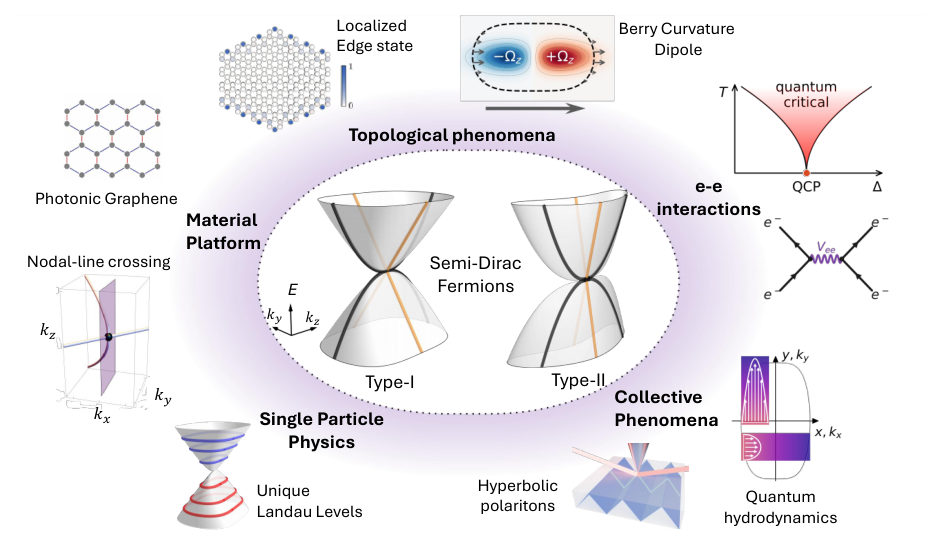
<figcaption class="paper-figure-caption"><b>Fig 1.</b> FIG. 1 Overview of the topics covered in the review. Semi-Dirac particles have been experimentally observed in different platforms, including synthetic lattices of various kinds (Sec. III.A) and in quantum materials with nodal lines (Sec. III.B). These quasiparticles show distinctive optical (Sec. II.D.1) and topological properties (Sec. II.A and II.D.3) and have a singular spectrum of Landau levels (Sec. II.C). The many-body problem resulting from electron-electron interactions is predicted to show a range of effects in both perturbative (Sec. IV.A) and non-perturbative regimes (Sec. IV.B), such as quantum hydrodynamics (Sec. IV.C.1), strong renormalizations (Sec. IV.C) and anisotropic...</figcaption>
</figure>
<figure class="paper-figure-card">
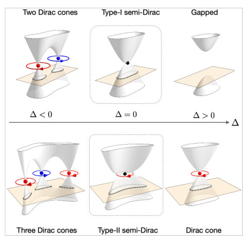
<figcaption class="paper-figure-caption"><b>Fig 2.</b> FIG. 2 Topological Lifshitz transition controlled by param- eter ∆. Top row: in the Dirac phase ∆&lt; 0, the merger of two Dirac cones with opposite π Berry phases, indicated by the circles, results in a semi-Dirac point of type I, with 2π Berry phase (∆= 0). The ∆&gt; 0 phase describes a triv- ial band insulator. Bottom row: three proximate anisotropic Dirac cones (∆&lt; 0) coalesce into a semi-Dirac point of type II, which has a π Berry phase (modulo 2π). The ∆&gt; 0 phase is semimetallic, with a single Dirac point.</figcaption>
</figure>
<figure class="paper-figure-card">
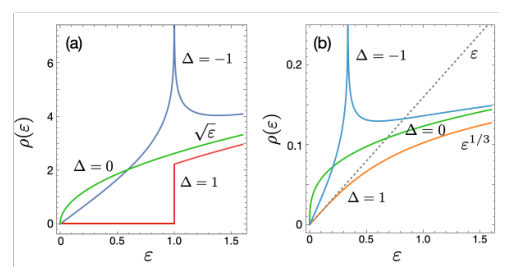
<figcaption class="paper-figure-caption"><b>Fig 3.</b> FIG. 3 Density of states ρ(ε) across the Lifshitz transition, in units of 2π2v/ √</figcaption>
</figure>
<figure class="paper-figure-card">
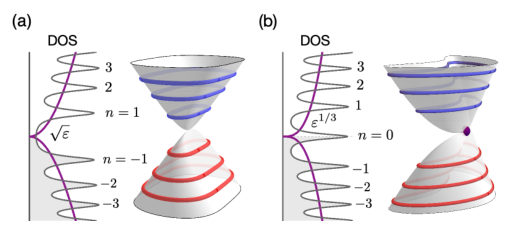
<figcaption class="paper-figure-caption"><b>Fig 4.</b> FIG. 4 Illustration of the energy scaling of the density of states (DOS) and the LL energy spectrum for type I (a) and type II (b) semi-Dirac fermions in the presence of a magnetic field B. Type-II semi-Dirac fermions have a π Berry phase and show a zero energy LL (n = 0), in contrast with the type- I case. Purple line: zero-field density of states. The energy of the levels scales with the signature B2/3 and B3/4 dependence with magnetic field, respectively.</figcaption>
</figure>
<figure class="paper-figure-card">
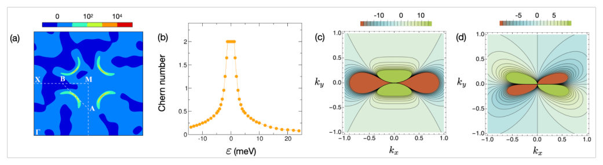
<figcaption class="paper-figure-caption"><b>Fig 5.</b> FIG. 5 (a) Brillouin zone of a TiO2/VO2 heterostructure. Density plot of the Berry curvature Ωz(k) in the presence of spin-orbit coupling. Gapped type-II semi-Dirac points form at the four red areas with Berry curvature accumulation. (b) Predicted total Chern number of TiO2/VO2 as a function of energy away from the Fermi level. Chern number is quantized inside the spin-orbit coupling gap. (c) Contour plot of the gradient of the Berry curvature of type-I semi-Dirac fermions, ∇kΩa z(kx, ky) along the massive direction, where two Dirac cones merge, and (d) along the relativistic direction, in the vicinity of the semi-Dirac point. Both panels are symmetric under momentum inversion k →−k, but...</figcaption>
</figure>
</div>

<p><strong>Summary.</strong> This review comprehensively surveys semi-Dirac fermions—quasiparticles with unique directional dispersion—which emerge at topological Lifshitz transition points. It details the theoretical differences between Type-I and Type-II phases by analyzing their distinct signatures in measurable quantities like DOS, Landau levels, and optical response. The work highlights that these exotic states are crucial for understanding modern quantum materials.</p>
<p><strong>Why it may be interesting.</strong> The study of topological phase transitions and exotic band structures provides rich ground for understanding emergent collective behavior in strongly interacting electron systems, which is central to condensed matter theory.</p>
<details>
<summary>Detailed structure</summary>
<p><strong>Main problem.</strong> The article reviews semi-Dirac fermions, which are two-dimensional quasiparticles exhibiting unique dispersion relations (quadratic or linear) depending on the direction of motion.</p>
<p><strong>Main result.</strong> The existence and properties of these fermions are intrinsically linked to topological Lifshitz transitions that govern changes in Fermi surface connectivity. Type-I and Type-II phases exhibit distinct signatures in their electronic structure.</p>
<p><strong>Method.</strong> Theoretical analysis involving calculating topological invariants like the Berry curvature, solving for Density of States (DOS) and Landau Levels (LLs), and analyzing transport properties using semiclassical quantization.</p>
<p><strong>Model / system.</strong> The physics is modeled using effective Hamiltonians (e.g., Type-I and Type-II forms) that describe low-energy excitations in quantum materials, often arising from topological phase boundaries.</p>
<p><strong>Key observables.</strong> Density of States ($
ho(\epsilon)$), Landau Level energy spectra ($\epsilon_n$), optical conductivity ($\sigma(\omega)$), and the Berry phase (topological invariant).</p>
<p><strong>Important parameters / regimes.</strong> The transition parameter $\Delta$ controls the type of semi-Dirac fermion; magnetic field $B$ is crucial for LL quantization.</p>
<p><strong>Assumptions / limitations.</strong> Calculations often assume the clean limit for transport properties, and the analysis relies on semiclassical approximations for Landau levels.</p>
<p><strong>Figures summary.</strong> Figures illustrate the evolution of DOS across the Lifshitz transition for both Type-I ($
ho \propto \sqrt{\epsilon}$) and Type-II ($
ho \propto \epsilon^{1/3}$), and show the characteristic energy scaling of LLs for different fermion types.</p>
<p><strong>Paper structure.</strong> The review progresses by introducing the concept, detailing specific Hamiltonian models (Type-I vs. Type-II), analyzing key diagnostics like DOS and LLs, discussing transport properties, and concluding with experimental evidence from synthetic lattices and quantum materials.</p>
</details>
<details>
<summary>Abstract</summary>
<p>This article reviews the recent progress on the subject of semi-Dirac fermions, two dimensional quasiparticles that disperse quadratically, as Galilean invariant particles, or linearly, as massless relativistic particles, depending on their direction of motion. These particles exist at a phase boundary set by the continuous change in the connectivity of Fermi surfaces, known as topological Lifshitz transitions. The basic properties and the current experimental evidence of the existence of these particles in both synthetic lattices and quantum materials are presented. The many-body problem of semi-Dirac fermions is discussed from a theoretical perspective with an eye to physical observables of relevance to experiments.</p>
</details>
<p><sub><a href="#top">↑ back to top</a></sub></p>

<p><a id="paper-2607.21160"></a></p>
<h3 id="duality-constrains-optimal-thresholds-in-quantum-error-correction"><a href="http://arxiv.org/abs/2607.21160v1">Duality constrains optimal thresholds in quantum error correction</a></h3>
<p><strong>Authors:</strong> Lucas H. English, Haoyuan Luo, Yangming Wang, Basudha Srivastava, Stephen D. Bartlett, Dominic J. Williamson<br>
<strong>Type:</strong> theory · <strong>Category:</strong> quantum information and computing · <strong>PDF:</strong> <a href="https://arxiv.org/pdf/2607.21160v1">https://arxiv.org/pdf/2607.21160v1</a><br>
<strong>Analysis basis:</strong> full PDF text, analyzed in chunks
<strong>Topic relevance:</strong> <code>Keldysh / 2PI / non-Gaussian methods</code> <strong>2/5</strong> · <code>entanglement &amp; information structure</code> <strong>2/5</strong> · <code>analog quantum simulation</code> <strong>1/5</strong> · <code>correlated / nonlocal dissipation</code> <strong>1/5</strong> · <code>driven-dissipative phase transition</code> <strong>1/5</strong> · <code>methods for driven-dissipative</code> <strong>1/5</strong> · <code>non-equilibrium dynamics</code> <strong>1/5</strong> · <code>non-equilibrium universality</code> <strong>1/5</strong></p>
<div class="figure-strip-hint">↔ Scroll figures horizontally</div>
<div class="paper-figures-scroll">
<figure class="paper-figure-card">
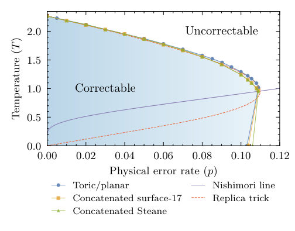
<figcaption class="paper-figure-caption"><b>Fig 1.</b> FIG. 1. Phase diagram for concatenated and topological QEC codes under bit-flip noise in the code capacity setting. The phase boundary is shown for the toric/planar code family (blue; data taken from Refs. [14, 15]), concatenated surface- 17 code (orange) and concatenated Steane code (green). The dashed red line indicates the phase boundary prediction ob- tained via the replica trick. We obtain the phase boundaries for the concatenated codes in this work. The intersection of the Nishimori line with each phase boundary determines the corresponding optimal error threshold. The shaded region denotes the stable ordered phase, in which quantum error correction is feasible and logical failures...</figcaption>
</figure>
<figure class="paper-figure-card">
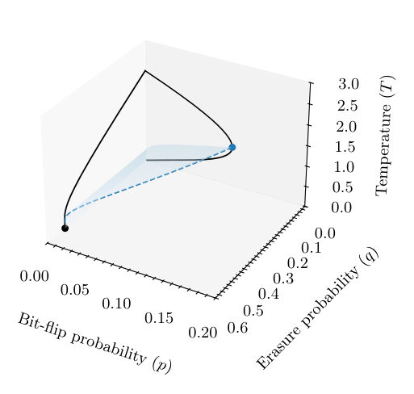
<figcaption class="paper-figure-caption"><b>Fig 2.</b> FIG. 2. The predicted phase diagram incorporating bit-flips and qubit erasures using the replica trick. The intersection of the Nishimori surface, defined by K = Jβ = 1</figcaption>
</figure>
<figure class="paper-figure-card">
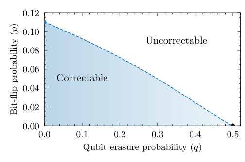
<figcaption class="paper-figure-caption"><b>Fig 3.</b> FIG. 3. Correctability phase diagram obtained by the inter- section of the Nishimori surface with the phase boundary pre- dicted by the replica trick. The shaded region is correctable in the thermodynamic limit.</figcaption>
</figure>
<figure class="paper-figure-card">
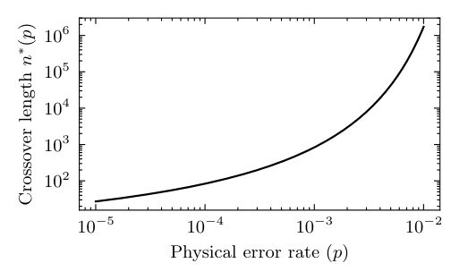
<figcaption class="paper-figure-caption"><b>Fig 4.</b> FIG. 4. Estimated crossover length n∗(p) for the concate- nated Steane code relative to a planar surface code in the path-counting regime. For n ≳n∗(p), the improved distance scaling of the concatenated family is expected to overcome its entropic penalty.</figcaption>
</figure>
<figure class="paper-figure-card">
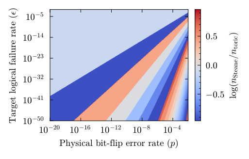
<figcaption class="paper-figure-caption"><b>Fig 5.</b> FIG. 5. Code family crossover in the fully postselected set- ting. Blue indicates the concatenated Steane code requires fewer physical qubits than the toric code to achieve a target logical failure rate; red indicates the converse.</figcaption>
</figure>
</div>

<p><strong>Summary.</strong> This work establishes that deep mathematical symmetries, specifically duality constraints derived from statistical mechanics, dictate the optimal error correction threshold for many quantum codes. By mapping QEC to a critical point problem and employing Renormalization Group techniques, the authors show that these universal constraints unify the understanding of performance across different code architectures.</p>
<p><strong>Why it may be interesting.</strong> It provides a powerful mathematical framework (duality/RG) from condensed matter physics to analyze fundamental limits in quantum computation, connecting abstract symmetries to concrete physical performance metrics like error thresholds.</p>
<details>
<summary>Detailed structure</summary>
<p><strong>Main problem.</strong> The paper investigates how duality constraints determine the optimal error correction threshold for various families of quantum error-correcting codes.</p>
<p><strong>Main result.</strong> Duality constrains all em-symmetric CSS codes to share a single universal optimal code capacity threshold, and this self-duality is preserved under code concatenation.</p>
<p><strong>Method.</strong> The authors employ statistical mechanical mappings, generalized Kramers-Wannier duality, and Renormalization Group (RG) flow analysis on the associated disordered Ising model.</p>
<p><strong>Model / system.</strong> The system analyzed is Quantum Error Correction (QEC), specifically focusing on CSS codes. The problem is mapped to a critical point of a statistical mechanical model described by an Ising-like Hamiltonian involving Pauli stabilizers.</p>
<p><strong>Key observables.</strong> Optimal error correction thresholds ($p_c$), logical failure rate ($ ext{P}_{    ext{fail}}$), and the free energy cost associated with logical operators.</p>
<p><strong>Important parameters / regimes.</strong> Error probability ($p$), code block size ($n$ or $L$), coupling constant ($K_p$), and the replica limit.</p>
<p><strong>Assumptions / limitations.</strong> The analysis relies on mapping QEC to a statistical mechanical model, assuming self-duality holds for zero-rate families, and using approximations like full postselection in RG flow calculations.</p>
<p><strong>Figures summary.</strong> Figures illustrate phase diagrams comparing different code types (topological vs. concatenated) relative to the Nishimori line, and show data collapse plots demonstrating the fit of $    ext{P}_{    ext{fail}}$ to scaling laws derived from RG analysis.</p>
<p><strong>Paper structure.</strong> The paper progresses by first establishing the connection between QEC thresholds and critical points via statistical mechanics. It then applies generalized duality arguments to constrain these thresholds for specific code classes, culminating in an analysis using RG flow to model concatenation effects on the failure probability.</p>
</details>
<details>
<summary>Abstract</summary>
<p>Error correction thresholds are often treated as the primary figure of merit for comparing quantum error-correcting code families. We show that the optimal error correction threshold for many commonly considered codes is constrained to a single universal value at leading order in a replica limit. Through a statistical mechanical mapping, we demonstrate that duality constrains all zero-rate em-symmetric CSS codes to have the same optimal code capacity threshold. Here, em symmetry means that the X- and Z-type parity-check matrices are equivalent up to row and column permutations. Under this statistical mechanical mapping, em-symmetric CSS codes are self-dual under a generalized Kramers-Wannier duality up to a mixing of logical sectors. For zero-rate code families, this mixing contributes only subextensive corrections, so the thermodynamic bulk free energy is self-dual in the trivial logical sector. This self-duality fixes the clean critical point and constrains the disordered phase boundary. We also show that self-duality is preserved under code concatenation, and that optimal decoding of concatenated codes can be reformulated as a renormalization group flow on a hierarchical lattice. Our results provide a common framework for analyzing topological, concatenated, and more general quantum low-density parity-check code families, including both their optimal code capacity thresholds and their sub-threshold logical error suppression.</p>
</details>
<p><sub><a href="#top">↑ back to top</a></sub></p>

<p><a id="paper-2607.21148"></a></p>
<h3 id="exceptional-point-geometry-of-weak-topological-boundary-states"><a href="http://arxiv.org/abs/2607.21148v1">Exceptional-Point Geometry of Weak Topological Boundary States</a></h3>
<p><strong>Authors:</strong> Rafael A. Molina, Kevin González, Pedro A. Orellana<br>
<strong>Type:</strong> theory · <strong>Category:</strong> other · <strong>PDF:</strong> <a href="https://arxiv.org/pdf/2607.21148v1">https://arxiv.org/pdf/2607.21148v1</a><br>
<strong>Analysis basis:</strong> full PDF text, analyzed in chunks
<strong>Topic relevance:</strong> <code>analog quantum simulation</code> <strong>2/5</strong> · <code>driven-dissipative phase transition</code> <strong>2/5</strong> · <code>Kondo &amp; dissipative impurity</code> <strong>1/5</strong> · <code>correlated / nonlocal dissipation</code> <strong>1/5</strong> · <code>correlated cavity matter</code> <strong>1/5</strong> · <code>non-equilibrium dynamics</code> <strong>1/5</strong></p>
<div class="figure-strip-hint">↔ Scroll figures horizontally</div>
<div class="paper-figures-scroll">
<figure class="paper-figure-card">
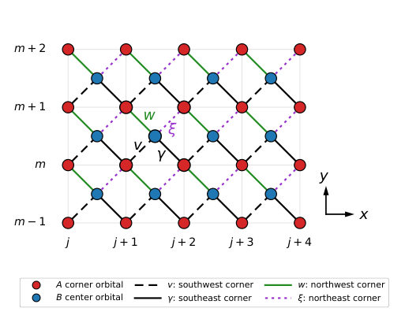
<figcaption class="paper-figure-caption"><b>Fig 1.</b> FIG. 1. Lattice schematic of the PCL model with the different hoppings. Sublattice A, red dots, only connects with sites in sublattice B, blue dots.</figcaption>
</figure>
<figure class="paper-figure-card">
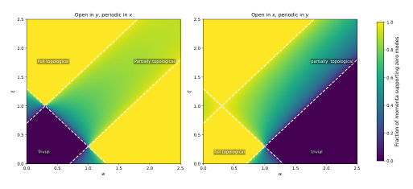
<figcaption class="paper-figure-caption"><b>Fig 2.</b> FIG. 2. Dual weak topology in the PCL model. The color scale gives the fraction of conserved momenta satisfying the SSH condition for ribbons open in y (left) and open in x (right). Dark regions are trivial, bright regions are fully weak topological, and intermediate colors correspond to par- tial weak topology with boundary states only in finite mo- mentum windows.</figcaption>
</figure>
<figure class="paper-figure-card">
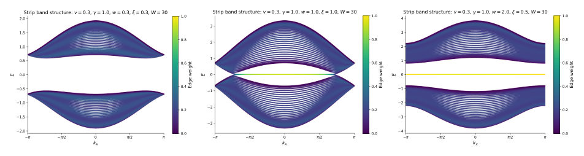
<figcaption class="paper-figure-caption"><b>Fig 3.</b> FIG. 3. Strip band structures in different topological regimes computed numerically from the finite lattice Hamiltonian periodic in x and open in y with W number of sites. Edge states appear within momentum windows determined by the SSH conditions. We only show examples with a finite y direction, equivalent spectra can be found in the dual direction exchanging the parameters w and γ. The color intensity represents the weight of the wave function in the three sites closer to the edges, directly related to the localization length.</figcaption>
</figure>
<figure class="paper-figure-card">
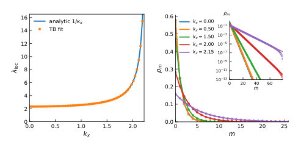
<figcaption class="paper-figure-caption"><b>Fig 4.</b> FIG. 4. Left: analytic localization length λx = (log |Bx/Ax|)−1 and compared with tight-binding fits. The parameters are v = 0.3, γ = 1.0, w = 1.0, ξ = 1.0, and W = 80 Right: edge-state density profiles for representative momenta. Solid curves show ρm ∝|zEP y |2m and markers are numerical tight-binding densities; the logarithmic inset dis- plays the exponential decay.</figcaption>
</figure>
<figure class="paper-figure-card">
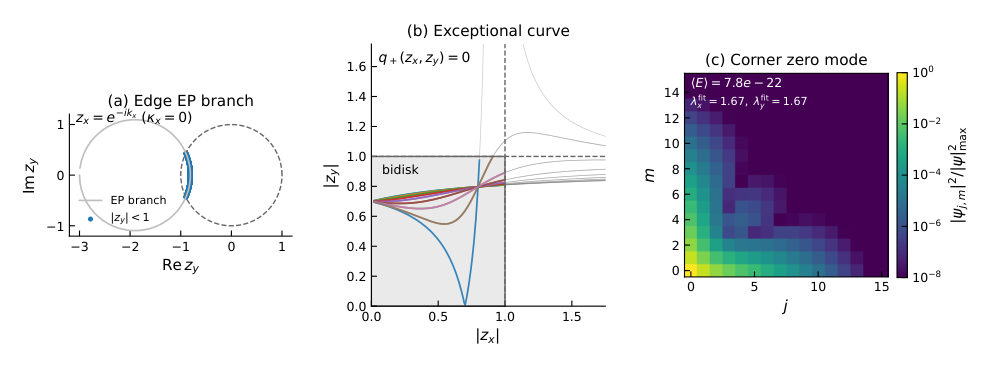
<figcaption class="paper-figure-caption"><b>Fig 5.</b> FIG. 5. Exceptional curves and corner-localized zero modes. (a) Edge exceptional-point branch obtained from zy = −(v + γzx)/(w + ξzx) with zx = e−ikx. The highlighted part satisfies |zy| &lt; 1. (b) Projection of the two-complex-momentum exceptional curve q+(zx, zy) = 0 onto the (|zx|, |zy|) plane. The shaded square is the bidisk where solutions decay in both directions. (c) Density of a near-zero eigenstate of a finite open PCL sample, localized near a corner.</figcaption>
</figure>
</div>

<p><strong>Summary.</strong> The paper introduces an exceptional point geometry approach to unify the description of weak topological boundary states in 2D lattices. Using the PCL model, it shows that edge, corner, and compact localized modes can all be understood as manifestations of singularities (exceptional points/curves) within the complex momentum space of the system's Hamiltonian. This offers a powerful, unified theoretical tool for characterizing various forms of topological localization.</p>
<p><strong>Why it may be interesting.</strong> This work provides a powerful generalization of topological concepts (like bulk-boundary correspondence) into the language of complex geometry (exceptional points), which is highly relevant for designing novel quantum materials or photonic structures with controlled boundary physics.</p>
<details>
<summary>Detailed structure</summary>
<p><strong>Main problem.</strong> The paper aims to develop a unified geometric framework for understanding weak topological boundary states, encompassing edge, corner, and compact localized modes.</p>
<p><strong>Main result.</strong> Weak topology can be described by exceptional singularities in the complex momentum space of an analytically continued Bloch Hamiltonian. This provides a single theoretical structure unifying different types of boundary localization phenomena.</p>
<p><strong>Method.</strong> The analysis involves analytically continuing the lattice Hamiltonian into complex momentum space and identifying zero modes by solving equations derived from this continuation.</p>
<p><strong>Model / system.</strong> The primary model is the Plaquette Chiral Lattice (PCL) in two dimensions, which serves as a minimal realization of dual weak topology. The system's behavior is governed by its Bloch Hamiltonian, $h(\mathbf{k})$.</p>
<p><strong>Key observables.</strong> Momentum-resolved winding numbers ($
u_x, 
u_y$), the location of exceptional points (EPs) and curves in complex momentum space, and the boundary localization length ($\ell$).</p>
<p><strong>Important parameters / regimes.</strong> The key parameters include the hopping coefficients ($v, \gamma, w, \xi$) and the complex momenta variables ($z_x, z_y$), which determine the nature of the localized state.</p>
<p><strong>Assumptions / limitations.</strong> The analysis relies on analytically continuing the Bloch Hamiltonian to complex momentum space for applicability beyond the specific PCL model. A transition occurs when reciprocal exceptional singularities reach the real Brillouin zone.</p>
<p><strong>Figures summary.</strong> Figures illustrate the lattice structure, show the fraction of conserved momenta supporting zero modes in ribbons, and depict the construction involving edge EP branches and corner mode localization within the bidisk.</p>
<p><strong>Paper structure.</strong> The paper establishes the PCL model, derives the Bloch Hamiltonian, extends the analysis to complex momentum space by analytically continuing the Hamiltonian, and then uses the resulting exceptional point geometry to characterize edge, corner, and compact localized states sequentially.</p>
</details>
<details>
<summary>Abstract</summary>
<p>In this article, we demonstrate that weak topology can be formulated geometrically in terms of exceptional singularities of an analytically continued Bloch Hamiltonian. A general plaquette chiral model in two dimensions serves as a minimal realization of dual weak topology, possessing two independent families of weak topological invariants, one for each spatial direction. The weak-topological edge states correspond to exceptional points in complex momentum space, while corner zero modes emerge from exceptional curves obtained by complexifying both momenta. Compact localized states arise when the exceptional roots collapse to the origin. This framework provides a unified complex-momentum description of edge, corner, and compact localization.</p>
</details>
<p><sub><a href="#top">↑ back to top</a></sub></p>

<p><a id="paper-2607.20702"></a></p>
<h3 id="high-order-geometric-channels-for-nonlinear-transport-in-bloch-bands"><a href="http://arxiv.org/abs/2607.20702v1">High Order Geometric Channels for Nonlinear Transport in Bloch Bands</a></h3>
<p><strong>Authors:</strong> Sami Farrag, Eugene Mele, Tony Low<br>
<strong>Type:</strong> theory · <strong>Category:</strong> other · <strong>PDF:</strong> <a href="https://arxiv.org/pdf/2607.20702v1">https://arxiv.org/pdf/2607.20702v1</a><br>
<strong>Analysis basis:</strong> full PDF text, analyzed in chunks
<strong>Topic relevance:</strong> <code>Keldysh / 2PI / non-Gaussian methods</code> <strong>2/5</strong> · <code>non-equilibrium dynamics</code> <strong>2/5</strong> · <code>analog quantum simulation</code> <strong>1/5</strong> · <code>driven-dissipative phase transition</code> <strong>1/5</strong> · <code>methods for driven-dissipative</code> <strong>1/5</strong> · <code>non-equilibrium universality</code> <strong>1/5</strong></p>
<div class="figure-strip-hint">↔ Scroll figures horizontally</div>
<div class="paper-figures-scroll">
<figure class="paper-figure-card">
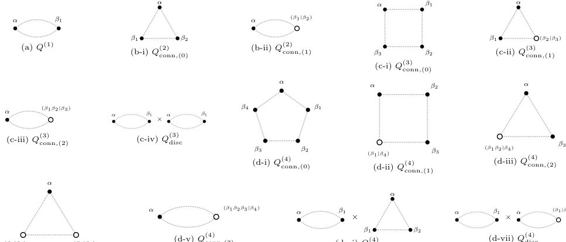
<figcaption class="paper-figure-caption"><b>Fig 1.</b> FIG. 1. Bargmann expansion through fourth order. Gray dotted lines denote projective contractions (intermediate-band sums) at fixed n and k; they carry no energy denominators. A black vertex labelled µ denotes Aµ, while an open vertex labelled (ρ1 · · · ρr|µ) denotes Dρ1 · · · DρrAµ. Panels (a), (b-i)–(b-ii), (c-i)–(c-iv), and (d-i)–(d-vii) collect the Q(1), Q(2), Q(3), and Q(4)</figcaption>
</figure>
<figure class="paper-figure-card">
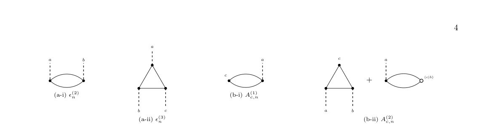
<figcaption class="paper-figure-caption"><b>Fig 2.</b> FIG. 2. Strict-order diagrams needed for the second- and third-order charge conductivity. These are the local geometric paths of Fig. 1 after attaching external perturbation legs and weighting their interband segments by bare resolvents. Panels (a-i) and (a-ii) are the first two nonzero energy corrections, while panels (b-i) and (b-ii) are the connection corrections through second order. Thin loop lines carry intermediate-band sums weighted by bare gaps 1/∆nm. Dashed legs label external perturbation weights αa, and the free connection index c is written.</figcaption>
</figure>
</div>

<p><strong>Summary.</strong> This work establishes a sophisticated geometric perturbation theory for nonlinear electronic transport in Bloch bands. It extends standard descriptions by calculating higher-rank tensors that capture complex multiband geometry. The key achievement is the derivation of intrinsic third-order conductivity channels using rigorous diagrammatic and recursive methods.</p>
<p><strong>Why it may be interesting.</strong> While focused on solid-state transport, the rigorous geometric framework—using higher-order invariants beyond curvature—provides powerful mathematical machinery applicable to any system where geometry dictates response, such as quantum optics or open quantum systems dynamics.</p>
<details>
<summary>Detailed structure</summary>
<p><strong>Main problem.</strong> The paper develops a geometric perturbation theory to calculate nonlinear transport coefficients, specifically charge conductivity, in electronic systems described by Bloch bands.</p>
<p><strong>Main result.</strong> It derives the full set of intrinsic third-order conductivity channels ($\sigma^L$ and $\sigma^W$) that are purely geometric, showing how higher-rank tensors encode physics beyond simple quantum metrics.</p>
<p><strong>Method.</strong> The methodology involves constructing a hierarchy of geometric tensors ($Q^{(N)}$) using the Bargmann trace and employing diagrammatic techniques to separate vertex-order (dressed) corrections from strict-order (bare gap) corrections.</p>
<p><strong>Model / system.</strong> The system is electronic matter described by Bloch wavefunctions in periodic potentials, analyzed via perturbation theory applied to interband couplings induced by an external electric field.</p>
<p><strong>Key observables.</strong> Third-order charge conductivity components ($\sigma_{abc;d}$), including intrinsic channels like the gradient of a three-band energy loop ($\sigma^L$) and curvature corrections ($\sigma^W$).</p>
<p><strong>Important parameters / regimes.</strong> Electric field strength ($E$), perturbation order ($N=3$ for conductivity), and relaxation time ($    au$).</p>
<p><strong>Assumptions / limitations.</strong> The analysis assumes the use of equilibrium distribution functions for intrinsic channels, leading to fully geometric results independent of scattering rates in the $   au  o 0$ limit.</p>
<p><strong>Figures summary.</strong> Figures illustrate the Bargmann expansion up to fourth order, diagrammatic rules for connected/disconnected tensors ($Q^{(N)}$), and specific diagrams showing strict-order corrections needed for second- and third-order conductivity calculations.</p>
<p><strong>Paper structure.</strong> The paper builds from developing the general geometric perturbation theory via the Bargmann trace hierarchy ($\Lambda(N)$) to deriving algebraic recursion relations, then applying these tools to calculate energy corrections (BW formalism), and finally collecting terms into specific, physically interpretable nonlinear transport channels for conductivity.</p>
</details>
<details>
<summary>Abstract</summary>
<p>We develop a geometric perturbation theory of Bloch states for perturbations coupling via the interband Berry connection. The gauge-invariant Bargmann trace builds the dressed dispersion and connection order by order as a hierarchy \(Q^{(N)}\), starting with the quantum geometric tensor. Higher members encode multiband geometry beyond the quantum metric and Berry curvature. Connected amplitudes control vertex-order corrections, while strict-order corrections reduce to disconnected products. For a uniform electric field we find the fully coherent, purely geometric sector of the third-order response.</p>
</details>
<p><sub><a href="#top">↑ back to top</a></sub></p>

<p><a id="paper-2607.20616"></a></p>
<h3 id="enabling-neutral-atom-integration-redesigning-device-models-for-universal-quantum-ecosystems"><a href="http://arxiv.org/abs/2607.20616v1">Enabling Neutral Atom Integration: Redesigning Device Models for Universal Quantum Ecosystems</a></h3>
<p><strong>Authors:</strong> Yannick Stade, Lukas Burgholzer, Ludwig Schmid, Robert Wille<br>
<strong>Type:</strong> theory · <strong>Category:</strong> quantum information and computing · <strong>PDF:</strong> <a href="https://arxiv.org/pdf/2607.20616v1">https://arxiv.org/pdf/2607.20616v1</a><br>
<strong>Analysis basis:</strong> full PDF text, analyzed in chunks
<strong>Topic relevance:</strong> <code>QC/QI experiment</code> <strong>2/5</strong> · <code>Rydberg arrays</code> <strong>1/5</strong> · <code>analog quantum simulation</code> <strong>1/5</strong> · <code>methods for driven-dissipative</code> <strong>1/5</strong> · <code>non-equilibrium dynamics</code> <strong>1/5</strong></p>
<div class="figure-strip-hint">↔ Scroll figures horizontally</div>
<div class="paper-figures-scroll">
<figure class="paper-figure-card">

<figcaption class="paper-figure-caption"><b>Fig 1.</b> Figure 1. (a) two atoms (blue) in SLM traps; three atoms (green) in AOD traps; two atom pairs perform a CZ gate. (b) two leftmost AOD atoms were shuttled right; a group of three atoms performs a CCZ gate.</figcaption>
</figure>
<figure class="paper-figure-card">

<figcaption class="paper-figure-caption"><b>Fig 2.</b> Figure 2. (a) the six stabilizers of the Steane code. (b) a circuit preparing its logical |0⟩-state with NA-native gates. (c) the resulting interaction graph (edges are CZ gates). (d) a qubit mapping to an NA device featuring local addressable multi-qubit gates. At least one CZ gate (the orange connection) requires the insertion of SWAP gates to route qubits. (e) the missing connection is enabled by shuttling offered by NA devices.</figcaption>
</figure>
<figure class="paper-figure-card">

<figcaption class="paper-figure-caption"><b>Fig 3.</b> Figure 3. (a) schematic of a zoned NA device showing the storage and entanglement zone; (b) magnification of the entanglement zone depicting the interaction and blocking radius clearly demonstrating that swapping qubits between different site pairs is infeasible.</figcaption>
</figure>
<figure class="paper-figure-card">

<figcaption class="paper-figure-caption"><b>Fig 4.</b> Figure 4. (a) a group of sites, the sublattice in green, is duplicated and shifted by two lattice vectors ⇀ 𝑣1 and ⇀ 𝑣2 in blue to form a 2D lattice of sites within a given extent in orange; (b) also other structures like honeycomb lattices can be defined using this method.</figcaption>
</figure>
<figure class="paper-figure-card">

<figcaption class="paper-figure-caption"><b>Fig 5.</b> Figure 5. A JSON specification of the NA device is compiled into a shared library with QDMI as an interface. The library is loaded and accessed by the driver. Our driver implementation provides Python bindings that interact with the driver and eventually with the device.</figcaption>
</figure>
</div>

<p><strong>Summary.</strong> The paper tackles the incompatibility between current quantum device modeling standards (designed for superconducting qubits) and the unique capabilities of neutral atom systems. By proposing an enhanced, spatially aware device model that accounts for dynamic shuttling and zoned operations, the authors demonstrate a massive improvement in compilation fidelity when integrating these advanced platforms into universal quantum software ecosystems.</p>
<p><strong>Why it may be interesting.</strong> This work directly addresses the software abstraction layer bottleneck for next-generation quantum hardware, providing a crucial theoretical blueprint for integrating dynamic physical platforms like neutral atoms into standardized quantum computing toolkits.</p>
<details>
<summary>Detailed structure</summary>
<p><strong>Main problem.</strong> Existing universal quantum ecosystem device models are limited by superconducting hardware assumptions, failing to capture the dynamic capabilities of emerging neutral atom platforms.</p>
<p><strong>Main result.</strong> The proposed redesign of device models enables seamless integration of neutral atoms into existing ecosystems, leading to a routing overhead fidelity improvement up to a factor of 100,000.</p>
<p><strong>Method.</strong> The authors propose targeted extensions to current device model specifications (using JSON) to incorporate spatial coordinates and dynamic operations like shuttling and zoning.</p>
<p><strong>Model / system.</strong> The system involves Neutral Atom quantum processors utilizing optical tweezers/lattices for qubits. The model must abstract features like dynamic qubit rearrangement, zoned operations, and precise site locations in 2D/3D space.</p>
<p><strong>Key observables.</strong> Routing overhead fidelity (the primary metric), which measures the accumulated error across a circuit's gates.</p>
<p><strong>Important parameters / regimes.</strong> Qubit count (e.g., 16 qubits) and gate count (e.g., 600 gates); spatial parameters like interaction/blocking radii, basis vectors for lattice definition.</p>
<p><strong>Assumptions / limitations.</strong> Current universal quantum ecosystems rely on device models that assume static qubit positions and fixed coupling maps, which is the core limitation being addressed.</p>
<p><strong>Figures summary.</strong> Figures illustrate NA operations including shuttling and zoned gates; Figure 4 shows how lattices are constructed via basis vectors; Figure 5 details the workflow from JSON specification to a shared library accessed via QDMI.</p>
<p><strong>Paper structure.</strong> The paper identifies the technology lock caused by SC-centric device models, proposes model extensions to capture NA dynamics (shuttling/zoning), demonstrates this using the QDMI framework, and quantifies the fidelity improvement over static models.</p>
</details>
<details>
<summary>Abstract</summary>
<p>Quantum computing is transitioning from an academic idea to a practical technology, driven by recent hardware advancements and clear paths toward real-world applications. Universal quantum ecosystems (e.g., Qiskit, Cirq, PennyLane) facilitate this transition by providing a consistent interface to diverse quantum devices, abstracting hardware-specific details through a device model that captures each device's computational capabilities. However, these device models have historically been shaped by superconducting hardware, assuming static qubit positions and fixed coupling maps. This prevents them from representing the unique computational capabilities of emerging technologies such as neutral atoms, which feature dynamic qubit rearrangement and zoned operations. As a result, although numerous specialized compilers for neutral atom devices already exist, they cannot retrieve the hardware information they need through these ecosystems - creating a technology lock that hinders or even prevents the integration of neutral atom devices. In this work, we demonstrate how this limitation leads to suboptimal compilation results and can exclude certain devices entirely. Motivated by this, we propose rethinking current device models to faithfully represent neutral atom devices, enabling their seamless integration into universal quantum ecosystems. Evaluations conducted within the Quantum Device Management Interface (QDMI) demonstrate that the proposed device model unlocks a routing overhead fidelity improvement by a factor of up to 100,000 on a circuit with 16 qubits and 600 gates.</p>
</details>
<p><sub><a href="#top">↑ back to top</a></sub></p>

<p><a id="paper-2607.20944"></a></p>
<h3 id="gaplessness-indicator-by-topologically-trivial-twisting-operators"><a href="http://arxiv.org/abs/2607.20944v1">Gaplessness indicator by topologically trivial twisting operators</a></h3>
<p><strong>Authors:</strong> Yuan Yao, Linhao Li, Feng-Feng Song<br>
<strong>Type:</strong> theory · <strong>Category:</strong> strongly correlated electrons · <strong>PDF:</strong> <a href="https://arxiv.org/pdf/2607.20944v1">https://arxiv.org/pdf/2607.20944v1</a><br>
<strong>Analysis basis:</strong> full PDF text, analyzed in chunks
<strong>Topic relevance:</strong> <code>analog quantum simulation</code> <strong>2/5</strong> · <code>Keldysh / 2PI / non-Gaussian methods</code> <strong>1/5</strong> · <code>entanglement &amp; information structure</code> <strong>1/5</strong></p>
<div class="figure-strip-hint">↔ Scroll figures horizontally</div>
<div class="paper-figures-scroll">
<figure class="paper-figure-card">

<figcaption class="paper-figure-caption"><b>Fig 1.</b> FIG. 1. QMC simulations of (1 −⟨UF⟩) with Fcos and Fsawtooth: (a) the gapped AKLT model; (b) the MG model; (c) XXZ model with ∆= 2 in the gapped regime; (d) the gapless spin-1/2 HAF model.</figcaption>
</figure>
</div>

<p><strong>Summary.</strong> This theoretical work establishes a general criterion to distinguish between gapped and gapless quantum many-body systems in 1D with U(1) symmetry. It achieves this by analyzing the finite-size scaling of expectation values involving 'topologically trivial twisting operators.' This provides a robust diagnostic tool, which can also predict measurable decay rates for static structure factors.</p>
<p><strong>Why it may be interesting.</strong> The development of gaplessness indicators based on local, topologically trivial observables provides a powerful, potentially experimentally accessible diagnostic tool that circumvents the need for complex topological invariants previously required.</p>
<details>
<summary>Detailed structure</summary>
<p><strong>Main problem.</strong> The authors aim to develop general, necessary conditions for determining if a one-dimensional quantum many-body system with U(1) symmetry is gapped.</p>
<p><strong>Main result.</strong> They show that the ground-state expectation value of specific 'topologically trivial twisting operators' must approach unity in the thermodynamic limit for a gapped system. Violation of this scaling indicates gaplessness.</p>
<p><strong>Method.</strong> The method involves analyzing the behavior of correlation functions and specialized lattice operators (twisting operators) in the ground state sector using techniques involving Fourier decomposition and finite-size scaling arguments.</p>
<p><strong>Model / system.</strong> The theory applies to general one-dimensional quantum many-body systems possessing U(1) symmetry and lattice translation symmetry, including models like spin chains or fermion chains.</p>
<p><strong>Key observables.</strong> The primary diagnostic is the ground-state expectation value $\langle 	ext{gs}|U_F|	ext{gs}
angle$, which must scale as $1 + O(1/L)$ for gapped systems. Additionally, static structure factors are analyzed.</p>
<p><strong>Important parameters / regimes.</strong> One dimension (1D), U(1) symmetry, thermodynamic limit ($L 	o \infty$), and the zero average value of the function defining the operator ($ar{F}=0$).</p>
<p><strong>Assumptions / limitations.</strong> The analysis relies on the existence of lattice translation symmetry and assumes certain conditions on the structure factor decay rates for gapped states.</p>
<p><strong>Figures summary.</strong> Numerical results confirm that gapped models exhibit $\langle U_F 
angle = 1 + O(1/L)$, while gapless models violate this scaling. The Fermi sea calculation serves as a concrete example of violation.</p>
<p><strong>Paper structure.</strong> The paper develops from proposing initial, restrictive conditions (Theorem 3) to generalizing the diagnostic tool using 'topologically trivial' operators (Theorem 4). It then proves key lemmas regarding operator behavior in gapped systems and derives a general scaling law for static structure factors (Theorem 9).</p>
</details>
<details>
<summary>Abstract</summary>
<p>We propose several general necessary conditions for quantum many-body system in one dimension respecting U(1) symmetry to be gapped. We show that the ground-state expectation value of topologically trivial twisting operators must approach unity in the thermodynamic limit with a certain finite-size scaling. Equivalently, its violation can indicate gaplessness of U(1)-symmetric Hamiltonians. The topological triviality of such a twisting operator enables us to derive infinitely many other gaplessness indicators by static structure factor to any order in real experiments, which are impossible to obtain by earlier topologically nontrivial twisting operators. We also apply analytic and numerical calculations to test the efficiency and consistency of our results.</p>
</details>
<p><sub><a href="#top">↑ back to top</a></sub></p>

<p><a id="paper-2607.21544"></a></p>
<h3 id="the-trainability-of-photonic-quantum-circuits"><a href="http://arxiv.org/abs/2607.21544v1">The trainability of photonic quantum circuits</a></h3>
<p><strong>Authors:</strong> Alexander Makarovskiy, Adam Taylor, Zhenghao Li, Michael Hanks, Aubrey Clark, M. S. Kim, Ian Walmsley, William Clements<br>
<strong>Type:</strong> theory · <strong>Category:</strong> quantum information and computing · <strong>PDF:</strong> <a href="https://arxiv.org/pdf/2607.21544v1">https://arxiv.org/pdf/2607.21544v1</a><br>
<strong>Analysis basis:</strong> full PDF text, analyzed in chunks
<strong>Topic relevance:</strong> <code>quantum measurements</code> <strong>2/5</strong> · <code>analog quantum simulation</code> <strong>1/5</strong> · <code>methods for driven-dissipative</code> <strong>1/5</strong></p>
<div class="figure-strip-hint">↔ Scroll figures horizontally</div>
<div class="paper-figures-scroll">
<figure class="paper-figure-card">

<figcaption class="paper-figure-caption"><b>Fig 1.</b> Figure 1: We illustrate the class of VQAs considered in this paper. The ratio between two notions of variance, sample and circuit variance, give a measure of the number of samples needed to estimate accurate gradients to train a photonic circuit with respect to a specific observable. Circuit variance governs the fluctuations of the expected value of an observable with respect to circuit parameters, and exponentially small circuit variance is known as a barren plateau. Sample variance determines the number of samples needed to estimate the value of an observable within a given error. We study the trainability of photon-number observables, which exhibit a polynomially scaling variance ratio,...</figcaption>
</figure>
<figure class="paper-figure-card">

<figcaption class="paper-figure-caption"><b>Fig 2.</b> Figure 2: We visualise the distribution of a finite-sample estimate of a fixed observable at different parameter settings. For regimes with a high variance ratio, two observable estimates from different parameter settings will likely not be sufficiently distinct to resolve for which parameter set the ground-truth loss was smaller, due to the overlap in the distributions of the estimates. This can arise either through the means of the observable at different parameter settings being exponentially concentrated (top left), or through the variance of sampling the observable being exponentially large (top right).</figcaption>
</figure>
<figure class="paper-figure-card">

<figcaption class="paper-figure-caption"><b>Fig 3.</b> Figure 3: Sample and circuit variances as functions of the number of modes M for PNMs satisfying |α| = 6 and K ≤3. Panels (a) and (c) show the sample variance for photon densities ν = 0.5 and ν = 1 respectively. The dotted lines denote the asymptotic limits µ1(2α)|M→∞, towards which the sample variances converge. Panels (b) and (d) show the corresponding circuit variances. In both cases, the circuit variance decays only very slowly with M. Its visibly non-linear behaviour on the logarithmic vertical scale suggests that the decay is not exponential. We therefore conjecture that the circuit variance instead decays polynomially with M, as stated in Eq. (13).</figcaption>
</figure>
<figure class="paper-figure-card">

<figcaption class="paper-figure-caption"><b>Fig 4.</b> Figure 4: Circuit variance as a function of the number of modes M for observables ˆnα at several values of α. The input state is |1, 0⟩with photon density ν = 0.5. For each α, the circuit variance initially increases before entering a regime of very slow decay, with the maximum shifting to larger M as α increases. Although deriving the asymptotic decay analytically is challenging, the numerical results suggest a polynomial dependence on M, consistent with the scaling analysis in Fig. 3.</figcaption>
</figure>
<figure class="paper-figure-card">

<figcaption class="paper-figure-caption"><b>Fig 5.</b> Figure 5: Numerical scaling of the circuit and sample variances for two classes of photon- number polynomials (PNPs). For each value of M, we generate 20 PNPs with inde- pendently sampled random coefficients. Individual instances are shown as crosses, while solid lines indicate the corresponding averages. In panels (a) and (b), the PNPs contain all photon-number monomials (PNMs) satisfying |α| ≤2, with coefficients sampled uni- formly from [−1, 1]. Since the number of terms scales as |A| ∼O(M2), the average sample variance in (a) exhibits approximately quadratic growth. The circuit variance in (b) grows approximately linearly, indicating that the increasing number of terms compensates for...</figcaption>
</figure>
</div>

<p><strong>Summary.</strong> This paper analyzes the feasibility of using photonic circuits in Variational Quantum Algorithms by quantifying 'trainability' through variance ratios. It establishes a critical distinction: low-order polynomial observables remain trainable with polynomial resource scaling, whereas higher-order ones fail exponentially. This work validates photonic VQC as a promising near-term platform under specific structural constraints.</p>
<p><strong>Why it may be interesting.</strong> It provides rigorous, resource-based analysis showing that certain structured observables (low-order PNPs) maintain favorable scaling properties necessary for practical near-term quantum computation on photonic hardware.</p>
<details>
<summary>Detailed structure</summary>
<p><strong>Main problem.</strong> The study investigates the 'trainability' of photonic quantum circuits for Variational Quantum Algorithms (VQAs), which determines if loss function gradients can be resolved efficiently.</p>
<p><strong>Main result.</strong> Fixed-order photon-number polynomials maintain trainability, requiring only polynomially many samples as system size grows, unlike high-order observables which require exponential resources.</p>
<p><strong>Method.</strong> The authors introduce a diagnostic framework based on the ratio of sample variance to circuit variance to quantify the required number of quantum measurements for gradient estimation.</p>
<p><strong>Model / system.</strong> The platform is passive linear optical networks (PLONs) acting on photonic qubits, restricted to fixed total photon number input states. The dynamics are governed by unitary matrices U(M).</p>
<p><strong>Key observables.</strong> Photon-number observables (PNMs), which form the basis for constructing general polynomial observables.</p>
<p><strong>Important parameters / regimes.</strong> The ratio of sample variance to circuit variance; system size ($M$) and photon number ($n$).</p>
<p><strong>Assumptions / limitations.</strong> The analysis focuses on passive linear optics (PLONs) and assumes a fixed total photon number input state for the initial analysis.</p>
<p><strong>Figures summary.</strong> Figures illustrate how the ratio between sample and circuit variance measures the required samples for gradient estimation, showing scaling differences based on observable complexity.</p>
<p><strong>Paper structure.</strong> The paper develops a theoretical framework using moment calculations (first and second moments) to analyze the variances associated with estimating expectation values derived from photon number polynomials in PLONs. It compares polynomial vs. exponential scaling of these required samples.</p>
</details>
<details>
<summary>Abstract</summary>
<p>Variational quantum algorithms are a leading approach to near-term quantum computing, but their scalability can be limited by barren plateaus and the sampling cost of resolving small changes in the loss landscape. Here, we study the trainability of passive linear-optical quantum circuits and introduce a framework based on the ratio of sample variance to circuit variance. This ratio determines the number of circuit samples required to resolve local loss differences and gradients to proportional accuracy. We apply this framework to photon-number observables and identify both trainable and non-trainable regimes. Supported by analytic results and a numerically observed polynomial decay of the circuit variance, we find that fixed-order photon-number polynomials require only polynomially many samples as the system size grows, whereas high-order polynomials and observables based on output probabilities generally require exponentially many samples. Within the trainable regime, we further identify classes of observables in which quantum estimation achieves a polynomial speed-up over multiple classical methods. Within this family, neural network observables provide one practical construction that allow measurement outcomes to be efficiently processed into the desired polynomial. These results establish photonic variational quantum computing as a promising platform for near-term applications.</p>
</details>
<p><sub><a href="#top">↑ back to top</a></sub></p>

<p><a id="paper-2607.20917"></a></p>
<h3 id="gauge-auxiliary-field-quantum-monte-carlo-method-for-many-fermion-systems"><a href="http://arxiv.org/abs/2607.20917v1">Gauge Auxiliary-Field Quantum Monte Carlo Method for Many-Fermion Systems</a></h3>
<p><strong>Authors:</strong> Zhaozhan Zhang<br>
<strong>Type:</strong> theory · <strong>Category:</strong> strongly correlated electrons · <strong>PDF:</strong> <a href="https://arxiv.org/pdf/2607.20917v1">https://arxiv.org/pdf/2607.20917v1</a><br>
<strong>Analysis basis:</strong> full PDF text, analyzed in chunks
<strong>Topic relevance:</strong> <code>analog quantum simulation</code> <strong>2/5</strong> · <code>Keldysh / 2PI / non-Gaussian methods</code> <strong>1/5</strong></p>
<div class="figure-strip-hint">↔ Scroll figures horizontally</div>
<div class="paper-figures-scroll">
<figure class="paper-figure-card">

<figcaption class="paper-figure-caption"><b>Fig 1.</b> FIG. 2. Correlation energy of the LMG model for N = 10 and αy = 2αx = 2Gε, where G denotes the dimensionless coupling strength. The statistical uncertainty of the total correlation energy is on the order of 1% and is too small to be visible. Top: correlation energy per particle as a function of G. Bottom: deviation of the QMC results from the exact FCI values obtained by exact diagonalization of the LMG Hamiltonian. We compare the performance of MF-AFQMC with that of conventional AFQMC (denoted DG-AFQMC), with both QMC simulations guided by a parity-projected HF (PHF) trial state.</figcaption>
</figure>
<figure class="paper-figure-card">

<figcaption class="paper-figure-caption"><b>Fig 2.</b> FIG. 1. A configuration of the LMG model with N = 6 particles, in which transitions can only occur directly upward or downward due to the monopole-monopole interaction.</figcaption>
</figure>
<figure class="paper-figure-card">

<figcaption class="paper-figure-caption"><b>Fig 3.</b> FIG. 4. Relative error of the angular momentum observable Jz in the LMG model with N = 10 and W = 0 across various interaction strengths χ = (N −1)V/ε. The relative error is defined as |(⟨Jz⟩QMC −⟨Jz⟩FCI)/⟨Jz⟩FCI|, and the error bars denote the QMC statistical uncertainty. Results are shown for MF-AFQMC simulations guided by a deformed HF (DHF) trial state and a parity-projected HF (PHF) trial state with and without symmetry-projection sampling (SP).</figcaption>
</figure>
<figure class="paper-figure-card">

<figcaption class="paper-figure-caption"><b>Fig 4.</b> FIG. 3. Correlation energy of the LMG model for N = 10 and αx = 2αy = 2Gε, where G denotes the dimensionless coupling strength. The statistical uncertainty of the total correlation energy is on the order of 0.1% and is too small to be visible. Top: correlation energy per particle as a function of G. Bottom: deviation of the QMC results from the exact FCI values obtained by exact diagonalization of the LMG Hamiltonian. We compare the performance of MF-AFQMC with that of conventional AFQMC (denoted DG-AFQMC), with both QMC simulations guided by a parity-projected HF (PHF) trial state.</figcaption>
</figure>
</div>

<p><strong>Summary.</strong> This paper advances Quantum Monte Carlo simulations for strongly correlated fermions by introducing gauge augmentation into the AFQMC framework. It reinterprets stochastic process non-uniqueness as a tunable 'gauge' parameter, allowing researchers to dynamically improve sampling efficiency and accuracy. The results demonstrate that these gauge-enhanced methods provide robust tools for tackling complex many-body Hamiltonians.</p>
<p><strong>Why it may be interesting.</strong> While focused on nuclear/condensed matter Hamiltonians, the development of advanced stochastic sampling techniques applicable to fermionic dynamics is highly relevant for simulating complex quantum many-body systems in AMO physics.</p>
<details>
<summary>Detailed structure</summary>
<p><strong>Main problem.</strong> Calculating the ground state properties of interacting many-fermion systems is computationally challenging due to strong correlations and basis set limitations.</p>
<p><strong>Main result.</strong> The proposed gauge-augmented AFQMC methods successfully enhance sampling efficiency and reduce statistical fluctuations compared to conventional approaches when applied to models like LMG.</p>
<p><strong>Method.</strong> The core method involves extending Phaseless Auxiliary-Field Quantum Monte Carlo (AFQMC) by incorporating stochastic gauge freedom, treating the force bias as a drift gauge or utilizing Fermi gauges derived from natural orbitals.</p>
<p><strong>Model / system.</strong> The work focuses on general interacting many-fermion systems, using the Lipkin-Meshkov-Glick model as a proof of concept. The underlying physics is described by a second-quantized Hamiltonian with strong correlations.</p>
<p><strong>Key observables.</strong> Ground state energy expectation values and systematic bias/statistical fluctuations relative to exact results (FCI).</p>
<p><strong>Important parameters / regimes.</strong> Interaction strength ($\lambda$), imaginary time evolution parameter ($   au$), and the choice of gauge parameters ($g_s$).</p>
<p><strong>Assumptions / limitations.</strong> The AFQMC approach relies on approximations, notably the phaseless constraint; the novelty lies in systematically exploiting the non-uniqueness of the stochastic process via gauge transformations.</p>
<p><strong>Figures summary.</strong> Comparison of QMC estimators against exact FCI results demonstrating reduced bias and fluctuations when using symmetry-projected trial states (PHF+SP) versus standard methods (DHF).</p>
<p><strong>Paper structure.</strong> The paper introduces the challenge, details the theoretical framework by proposing gauge augmentation (drift/Fermi gauges), discusses implementation via natural orbitals and symmetry projection, and validates these techniques on a simple shell model Hamiltonian.</p>
</details>
<details>
<summary>Abstract</summary>
<p>We propose novel Quantum Monte Carlo (QMC) methods for interacting many-fermion systems by leveraging the stochastic gauge freedom, originally developed in Gaussian phase-space QMC, within the phaseless auxiliary-field QMC (AFQMC) framework. In particular, we reinterpret the conventional force bias in phaseless AFQMC as a drift gauge and explore Fermi gauges based on natural orbitals of a reduced one-body density matrix defined via a mixed estimator, yielding stochastic, time-dependent Hartree-Fock-like dynamics. We propose a symmetry-projection sampling scheme to enhance the sampling efficiency. As a proof of concept, we apply these gauge-augmented AFQMC methods to a simple shell-model Hamiltonian: the Lipkin-Meshkov-Glick model. Numerical results illustrate the potential of stochastic gauges to enhance accuracy and reduce fluctuations, underscoring the promise for advancing these new techniques toward more realistic shell-model applications.</p>
</details>
<p><sub><a href="#top">↑ back to top</a></sub></p>

<p><a id="paper-2607.21533"></a></p>
<h3 id="benchmarking-agents-for-proving-theorems-in-quantum-algorithms-and-quantum-information"><a href="http://arxiv.org/abs/2607.21533v1">Benchmarking Agents for Proving Theorems in Quantum Algorithms and Quantum Information</a></h3>
<p><strong>Authors:</strong> Lei Zhang, Yusheng Zhao, Yimeng Cao, Ranyiliu Chen, Mingrui Jing, Jizhe Lai, Ziao Tang, Jingu Xie, Hongshun Yao, Xuanqiang Zhao, Guocheng Zhen, Chengkai Zhu, Xin Wang<br>
<strong>Type:</strong> theory · <strong>Category:</strong> quantum information and computing · <strong>PDF:</strong> <a href="https://arxiv.org/pdf/2607.21533v1">https://arxiv.org/pdf/2607.21533v1</a><br>
<strong>Analysis basis:</strong> full PDF text, analyzed in chunks
<strong>Topic relevance:</strong> <code>entanglement &amp; information structure</code> <strong>2/5</strong></p>
<div class="figure-strip-hint">↔ Scroll figures horizontally</div>
<div class="paper-figures-scroll">
<figure class="paper-figure-card">

<figcaption class="paper-figure-caption"><b>Fig 1.</b> Figure 1: Benchmark construction workflow. Candidate problems are selected and written, translated into Lean, and checked before they enter the QAlg-Bench and QIT-Bench suites.</figcaption>
</figure>
<figure class="paper-figure-card">

<figcaption class="paper-figure-caption"><b>Fig 2.</b> Figure 2: Verified performance and per-score costs across QAlg-Bench and QIT-Bench. Panels (a,b) show the difficulty-weighted score and completion, respectively. Panels (c,d) show economic cost in USD per score point and time cost in seconds per score point, respectively; lower values indicate lower cost. Blue and orange identify QAlg-Bench and QIT-Bench. Solid, unhatched bars indicate the baseline condition, while dashed, diagonally hatched bars indicate LAD. Black N/A labels mark unavailable economic-cost values.</figcaption>
</figure>
<figure class="paper-figure-card">

<figcaption class="paper-figure-caption"><b>Fig 3.</b> Figure 2(a,b) compares the 16 recorded results. GPT-5.5 has the highest observed score in every suite– condition combination. In all eight historical within-model comparisons, the LAD result has higher score and completion than the baseline result. The magnitude varies substantially: DeepSeek V4-Pro, for example, shows a much larger separation between conditions on QAlg-Bench than on QIT-Bench. These single-run differences describe the recorded runs; the unmatched execution details prevent their interpretation as estimates of an access-condition effect. Figure 2(c,d) shows that the cost ordering differs from the performance ordering. DeepSeek V4-Pro has</figcaption>
</figure>
<figure class="paper-figure-card">

<figcaption class="paper-figure-caption"><b>Fig 4.</b> Figure 3: Difficulty-normalized field profiles for GPT-5.5, Kimi K3, DeepSeek V4-Pro, and MiniMax M3, from left to right. The six axes represent the QAlg-Bench and QIT-Bench fields defined in Tables 2 and 3; exact values are reported in Table 8. All panels use the same radial mapping, with equally spaced rings labelled 5, 20, 40, 65, and 100. Baseline is shown as a translucent filled profile with a solid outline, while LAD is shown as an unfilled dashed profile with hollow nodes. Each axis aggregates 10 to 17 tasks, so a single verified task can visibly move a field score.</figcaption>
</figure>
<figure class="paper-figure-card">

<figcaption class="paper-figure-caption"><b>Fig 5.</b> Figure 4: Within-suite score leaderboards for QAlg-Bench and QIT-Bench. Each model has adjacent baseline and LAD bars, with exact difficulty-weighted scores printed at the bar ends. Models are ordered within each suite by the larger of their two condition scores; ties are ordered as GPT-5.5, Kimi K3, DeepSeek V4-Pro, and MiniMax M3. Blue and orange identify QAlg-Bench and QIT-Bench, while solid outlines identify baseline and dashed, diagonally hatched outlines identify LAD.</figcaption>
</figure>
</div>

<p><strong>Summary.</strong> The paper introduces standardized benchmarks (QAlg-Bench and QIT-Bench) to rigorously test how well large language models can formally prove theorems in quantum information science. By comparing performance with and without access to verified domain libraries (LAD), the authors quantify model strengths, showing that structured knowledge significantly improves proof generation capabilities.</p>
<p><strong>Why it may be interesting.</strong> This work directly addresses the frontier of formal verification in quantum theory, providing a concrete, quantifiable measure of AI's current mathematical reasoning capabilities within the domain of quantum computation.</p>
<details>
<summary>Detailed structure</summary>
<p><strong>Main problem.</strong> The primary goal is to measure the current capability of large AI agents (LLMs) to construct rigorous, machine-checkable proofs for theorems in quantum algorithms and quantum information theory.</p>
<p><strong>Main result.</strong> Library-Augmented Deduction (LAD) significantly boosts performance across all tested models compared to baseline attempts, while revealing recurring weaknesses in areas like quantum simulation and entanglement theory.</p>
<p><strong>Method.</strong> The authors developed two formal benchmarks, Lean-QuantumAlg-Bench and Lean-QIT-Bench, consisting of theorem-completion tasks evaluated within the Lean 4 proof assistant environment.</p>
<p><strong>Model / system.</strong> The work evaluates four state-of-the-art LLMs (GPT-5.5, Kimi K3, DeepSeek V4-Pro, MiniMax M3) attempting to prove theorems concerning quantum algorithms and information theory concepts.</p>
<p><strong>Key observables.</strong> Difficulty-weighted scores (e.g., 60.4/100 on QAlg-Bench), completion rates, economic cost ($  ext{USD}/   ext{score point}$), and time cost ($ ext{s}/ ext{score point}$).</p>
<p><strong>Important parameters / regimes.</strong> The evaluation compares a task-only baseline against the Library-Augmented Deduction (LAD) setting, which provides access to verified domain libraries.</p>
<p><strong>Assumptions / limitations.</strong> The benchmarks assume that performance can be quantified by deterministic proof checking within a fixed Lean 4 environment, establishing a reproducible baseline for future AI development.</p>
<p><strong>Figures summary.</strong> Figure 1 illustrates the benchmark construction workflow. Figure 2 and 4 show score leaderboards comparing model performance (score/completion) across QAlg-Bench and QIT-Bench in both baseline and LAD settings. Table 8 provides detailed difficulty-normalized field scores.</p>
<p><strong>Paper structure.</strong> The paper introduces the problem, details the construction of the two benchmarks (QAlg-Bench and QIT-Bench), describes the evaluation methodology (baseline vs. LAD), presents quantitative results comparing multiple LLMs across various metrics, and concludes by discussing implications for AI science.</p>
</details>
<details>
<summary>Abstract</summary>
<p>Formal verification is becoming increasingly practical for quantum computing, yet the ability of AI agents to construct machine-checkable proofs in this domain remains unmeasured. We introduce Lean-QuantumAlg-Bench and Lean-QIT-Bench, two Lean 4 benchmarks containing 36 and 40 theorem-completion tasks for quantum algorithms and quantum information theory, respectively. Every task compiles in a fixed environment and is evaluated by deterministic proof checking and targeted semantic review, with difficulty weights assigned before model execution. We evaluate four models-GPT-5.5, Kimi K3, DeepSeek V4-Pro, and MiniMax M3-within a common theorem-proving framework under two settings: a task-only baseline and library-augmented deduction (LAD), which additionally provides access to a verified domain library. The highest difficulty-weighted scores are 60.4 out of 100 on the quantum-algorithm benchmark and 59.6 out of 100 on the quantum-information benchmark. LAD improves both score and completion rate in all eight model-benchmark comparisons, with gains of up to 15.9 points, providing evidence that verified libraries can strengthen domain-specific proof agents. The results reveal recurring weaknesses of agentic proving in areas such as quantum simulation, quantum learning, quantum information measures, and entanglement theory. Monetary and wall-clock costs per score point also vary substantially across models, highlighting important capability-efficiency trade-offs. We expect these benchmarks to establish a reproducible baseline for developing more capable and reliable proof agents, and to pave the way toward self-evolving AI scientists for advancing quantum information science.</p>
</details>
<p><sub><a href="#top">↑ back to top</a></sub></p>

<p><a id="paper-2607.21103"></a></p>
<h3 id="entanglement-evolutionary-stability-and-strategy-space-dependence-in-an-ewl-quantum-game"><a href="http://arxiv.org/abs/2607.21103v1">Entanglement, Evolutionary Stability, and Strategy-Space Dependence in an EWL Quantum Game</a></h3>
<p><strong>Authors:</strong> Azhar Iqbal, Derek Abbott<br>
<strong>Type:</strong> theory · <strong>Category:</strong> other · <strong>PDF:</strong> <a href="https://arxiv.org/pdf/2607.21103v1">https://arxiv.org/pdf/2607.21103v1</a><br>
<strong>Analysis basis:</strong> full PDF text, analyzed in chunks
<strong>Topic relevance:</strong> <code>correlated / nonlocal dissipation</code> <strong>1/5</strong> · <code>driven-dissipative phase transition</code> <strong>1/5</strong> · <code>entanglement &amp; information structure</code> <strong>1/5</strong> · <code>methods for driven-dissipative</code> <strong>1/5</strong></p>
<div class="figure-strip-hint">↔ Scroll figures horizontally</div>
<div class="paper-figures-scroll">
<figure class="paper-figure-card">

<figcaption class="paper-figure-caption"><b>Fig 1.</b> Figure 1: Normalized Nash payoffgap (54) in the restricted two-parameter EWL strategy space. Colour represents b∆(2) NE on a common scale with minimum 0 (dark purple) and maximum 1 (yellow). The actual panel maxima are 0, sin(π/4) = 1/ √</figcaption>
</figure>
<figure class="paper-figure-card">

<figcaption class="paper-figure-caption"><b>Fig 2.</b> Figure 2: Normalized second ESS payoffgap at γ = 0. Since −cos2 θ is not strictly positive for mutants, the equilibrium corresponding to the classical mixed equilibrium is not evolutionarily stable at zero entanglement.</figcaption>
</figure>
<figure class="paper-figure-card">

<figcaption class="paper-figure-caption"><b>Fig 3.</b> Figure 3: Strategy-space dependence of evolutionary stability. Entanglement stabilizes the equilibrium in the restricted EWL space, but the stabilization does not survive enlargement to the full pure SU(2) strategy space.</figcaption>
</figure>
</div>

<p><strong>Summary.</strong> This paper analyzes an EWL quantum game to determine how entanglement influences evolutionary stability. It finds that while entanglement stabilizes the equilibrium within a restricted strategy subspace, this stabilizing effect vanishes when the allowed strategies are expanded to the full SU(2) group. This demonstrates a strong dependence of dynamical stability on the assumed strategic domain.</p>
<p><strong>Why it may be interesting.</strong> This work explores how the mathematical structure imposed by quantum constraints (like entanglement) can stabilize dynamical equilibria that are unstable classically, highlighting the critical role of the underlying parameter space in determining emergent stability properties.</p>
<details>
<summary>Detailed structure</summary>
<p><strong>Main problem.</strong> The study investigates how entanglement, introduced via EWL quantization, affects the evolutionary stability (ESS) of an interior mixed Nash equilibrium in a quantum game.</p>
<p><strong>Main result.</strong> Entanglement successfully stabilizes the equilibrium as an ESS only within a restricted two-parameter strategy space; this stabilization fails when the strategy space is enlarged to the full SU(2) manifold.</p>
<p><strong>Method.</strong> The authors use concepts from evolutionary game theory (ESS criteria) applied to quantum games, comparing payoff gaps calculated under restricted versus full parameterizations of quantum strategies.</p>
<p><strong>Model / system.</strong> The model is a symmetric $2 	imes 2$ game analyzed using the Eisert–Wilkens–Lewenstein (EWL) quantization scheme. Strategies are parameterized either by a restricted two-parameter set or the full three-parameter SU(2) group.</p>
<p><strong>Key observables.</strong> Payoff gaps ($P(s^*, s^*) - P(s, s^*)$), strictness of Nash equilibrium, and satisfaction of the second ESS condition.</p>
<p><strong>Important parameters / regimes.</strong> The entanglement parameter $\gamma$, which controls the degree of quantum correlation in the game dynamics.</p>
<p><strong>Assumptions / limitations.</strong> The analysis is confined to a specific $2 	imes 2$ game structure and relies on comparing stability across restricted vs. full strategic domains.</p>
<p><strong>Figures summary.</strong> Figure 1 shows the normalized Nash payoff gap confirming strictness in the restricted space for $\gamma > 0$. Figure 3 summarizes the loss of ESS status when moving from the restricted EWL domain to the full pure SU(2) space.</p>
<p><strong>Paper structure.</strong> The paper first establishes that the classical game ($\gamma=0$) fails the ESS condition. It then proves stabilization in the restricted EWL space for $\gamma > 0$. Finally, it demonstrates the failure of this stability when extending the strategy set to the full SU(2) family.</p>
</details>
<details>
<summary>Abstract</summary>
<p>We examine how Eisert--Wilkens--Lewenstein (EWL) quantization affects evolutionary stability in a symmetric $2\times2$ game whose interior mixed Nash equilibrium is not evolutionarily stable. In the restricted two-parameter EWL strategy space, the quantum equilibrium $s^*=(π/2,π/4)$ becomes a strict symmetric Nash equilibrium, and hence an evolutionarily stable strategy, for every $γ>0$. Extending the admissible pure strategies to the full three-parameter $SU(2)$ family preserves the Nash equilibrium but introduces a continuum of payoff-neutral mutants, causing strictness and the second ESS condition to fail. Thus, entanglement stabilizes the equilibrium only within the restricted EWL strategy space; the effect does not survive enlargement to full $SU(2)$.</p>
</details>
<p><sub><a href="#top">↑ back to top</a></sub></p>

<p><a id="paper-2607.21379"></a></p>
<h3 id="free-volume-origin-of-diverging-direct-correlations-in-hard-crystals-insights-from-an-exact-one-dimensional-model"><a href="http://arxiv.org/abs/2607.21379v1">Free-volume origin of diverging direct correlations in hard crystals: insights from an exact one-dimensional model</a></h3>
<p><strong>Authors:</strong> Alessandro Simon, Martin Oettel<br>
<strong>Type:</strong> theory · <strong>Category:</strong> statistical mechanics · <strong>PDF:</strong> <a href="https://arxiv.org/pdf/2607.21379v1">https://arxiv.org/pdf/2607.21379v1</a><br>
<strong>Analysis basis:</strong> full PDF text, analyzed in chunks
<strong>Topic relevance:</strong> <code>Frenkel-Kontorova</code> <strong>1/5</strong> · <code>Keldysh / 2PI / non-Gaussian methods</code> <strong>1/5</strong></p>
<div class="figure-strip-hint">↔ Scroll figures horizontally</div>
<div class="paper-figures-scroll">
<figure class="paper-figure-card">

<figcaption class="paper-figure-caption"><b>Fig 1.</b> FIG. 1. Density profiles and corresponding weighted densities for a broad peak (a) and a sharply localized peak (b) for nvac = 1 × 10−2. The weighted packing fraction n1 determines the local insertion free volume A = 1 −n1.</figcaption>
</figure>
<figure class="paper-figure-card">

<figcaption class="paper-figure-caption"><b>Fig 2.</b> FIG. 2. Crossover for the inverse minimal free volume implied by Equation (20). The minimum insertion free volume follows Amin ≃nvac only while the vacancy contribution exceeds the residual free volume ∆αa. The corresponding inverse-free- volume amplification saturates at 1/∆αa when nvac ≪∆αa.</figcaption>
</figure>
<figure class="paper-figure-card">

<figcaption class="paper-figure-caption"><b>Fig 3.</b> FIG. 3. First direct correlation function for a single broad density peak (a) and a sharply localized peak (b). The strong vacancy dependence in panel (b) reflects the regime Amin ≃ nvac; the weak dependence in panel (a) reflects saturation at a finite residual free volume.</figcaption>
</figure>
<figure class="paper-figure-card">

<figcaption class="paper-figure-caption"><b>Fig 4.</b> FIG. 4. Full second direct correlation function for sharply localized peaks (a, b), and broad density peaks (c, d) at nvac = 1×10−2. The lattice spacing was either a/σ = 1.03 for (a, c) and a/σ = 1.1 for (b, d). The strict support (marked by the dashed region) remains fixed by the rod length, but the dominant large-amplitude contribution becomes concentrated along geometrically selected regions in the sharp case. For the numerics, a lattice with five density peaks has been used, shown is only the region around the middle peak.</figcaption>
</figure>
<figure class="paper-figure-card">

<figcaption class="paper-figure-caption"><b>Fig 5.</b> FIG. 5. Numerical solution of the inhomogeneous Ornstein– Zernike equation for a sharply localized profile at nvac = 1 × 10−2 and a = 1.03. The dashed and full lines show the different support in the unit cell, cf. Figure 6.</figcaption>
</figure>
</div>

<p><strong>Summary.</strong> This work uses an exact 1D hard-rod model within statistical mechanics to explain the anomalous behavior of direct correlation functions in crystalline solids. It shows that these divergences are not arbitrary but arise directly from the geometry and scarcity of local free volume within the crystal lattice. The findings provide a minimal, physically grounded explanation for both the magnitude and structure of these key thermodynamic quantities.</p>
<p><strong>Why it may be interesting.</strong> While focused on classical hard-body systems, the rigorous connection drawn between singular thermodynamic quantities (like $c^{(2)}$) and geometric constraints (like minimal free volume) provides a powerful theoretical template applicable to understanding correlations in quantum many-body systems near phase boundaries or confinement.</p>
<details>
<summary>Detailed structure</summary>
<p><strong>Main problem.</strong> The study aims to explain the unusually large amplitudes and specific spatial structure of second-order direct correlation functions in hard-sphere crystals compared to their liquid counterparts.</p>
<p><strong>Main result.</strong> The paper establishes that both the magnitude (scaling as $1/n_{vac}$) and the lattice-specific form of these correlations are fundamentally controlled by the minimum local insertion free volume, $A_{\min}$.</p>
<p><strong>Method.</strong> The authors employ an exact one-dimensional model for hard rods within a classical Density Functional Theory framework to derive theoretical scaling laws.</p>
<p><strong>Model / system.</strong> The system modeled is a crystal of hard spheres (approximated by hard rods in 1D) characterized by a periodic, crystal-like density profile. The analysis focuses on the local insertion free volume $A(x)$ as the key thermodynamic quantity.</p>
<p><strong>Key observables.</strong> Second direct correlation function ($c^{(2)}$), first direct correlation function ($c^{(1)}$), and the local insertion free volume ($A(x)$).</p>
<p><strong>Important parameters / regimes.</strong> Vacancy concentration ($n_{vac}$), residual free volume ($\Delta\alpha_a$), and the minimum local free volume ($A_{\min}$).</p>
<p><strong>Assumptions / limitations.</strong> The analysis relies on using an exactly solvable 1D model and imposing a periodic density profile, rather than modeling the full crystallization transition.</p>
<p><strong>Figures summary.</strong> Figures illustrate density profiles showing how $A$ changes between broad and sharply localized peaks. Other figures compare $c^{(2)}$ for sharp versus broad peaks, demonstrating geometric selectivity related to free volume.</p>
<p><strong>Paper structure.</strong> The paper develops the theory by first establishing the relationship between direct correlations and local free volume in 1D (using the Ornstein-Zernike equation). It then analyzes how this mechanism dictates both the magnitude ($c^{(2)} \sim -1/A_{\min}$) and the spatial structure of the correlation functions.</p>
</details>
<details>
<summary>Abstract</summary>
<p>Second order direct correlation functions in three-dimensional hard-sphere crystals have much larger amplitudes (of the order of $1/n_{\mathrm{vac}}$ where $n_{\mathrm{vac}}$ is the vacancy concentration) and a more strongly structured spatial form of apparent shorter range than their liquid-state counterparts. We separate the two underlying questions---why the correlations are large and why they have the form they do---using the exact one-dimensional Percus functional for hard rods. A periodic crystal-like density is represented by Gaussian peaks with occupation probability $q=1-n_{\mathrm{vac}}$. The relevant thermodynamic quantity is the local insertion free volume $A(x)$. Its minimum can be written as $A_{\mathrm{min}} =Δ_{αa}+(1-Δ_{αa})n_{\mathrm{vac}}$, where $Δ_{αa}$ is the residual free volume at full occupation caused by finite localization (characterized by a width parameter $α$) and lattice spacing $a$. The first and second direct correlations therefore contain the singular dependences $c^{(1)}\sim\ln A_{\mathrm{min}} $ and $c^{(2)} \sim-1/A_{\mathrm{min}} $. The observed $1/n_{\mathrm{vac}}$ dependence is the vacancy-dominated limit $n_{\mathrm{vac}}\ggΔ_{αa}$, rather than the most general result. The spatial form of $c^{(2)}$ has a separate geometrical origin: the hard-rod weight functions select configurations in which exclusion intervals and their boundaries intersect regions of small free volume. This produces plateaus, edges, and localized ridges tied to the underlying periodic density. A numerical solution of the inhomogeneous Ornstein--Zernike equation shows how these singular direct correlations are redistributed in the total and pair correlations. The model provides a minimal free-volume explanation for both the magnitude and the lattice-specific form of crystalline direct correlation functions.</p>
</details>
<p><sub><a href="#top">↑ back to top</a></sub></p>
<hr>
<p>
<a href="index.html">← Index</a>
 · <a href="papers_03.html">← Previous</a> · <a href="papers_05.html">Next →</a>
</p>
<hr>

</body>
</html>
